Code
library(tidyverse)
library(sf)
library(hms)
library(forcats)
library(tmap)
library(patchwork)
library(adehabitatHR)
library(scales)library(tidyverse)
library(sf)
library(hms)
library(forcats)
library(tmap)
library(patchwork)
library(adehabitatHR)
library(scales)Datenquelle: GitHub
Gemäss Datenquelle sei es EPSG 25833, aber die Koordinaten sind in WGS84.
cats_list <- list()
for (i in 1:92) {
file_path <- paste0("cat_GPS_data/cat_", i, ".csv")
cats_list[[as.character(i)]] <- read_delim(file_path, delim = ",") %>%
mutate(cat_id = i)
}
cats_all <- bind_rows(cats_list)head(cats_all)| x | y | datetime | cat_id |
|---|---|---|---|
| <dbl> | <dbl> | <dttm> | <int> |
| 10.80864 | 59.65171 | 2021-05-03 01:57:57 | 1 |
| 10.80861 | 59.65185 | 2021-05-03 02:00:22 | 1 |
| 10.80863 | 59.65194 | 2021-05-03 02:12:27 | 1 |
| 10.80876 | 59.65188 | 2021-05-03 02:14:52 | 1 |
| 10.80892 | 59.65223 | 2021-05-03 02:21:35 | 1 |
| 10.80899 | 59.65237 | 2021-05-03 02:24:00 | 1 |
Die Koordinaten zeigen klar, dass es sich um geographische Koordinaten handeln muss (WGS84). Die Daten werden entsprechend mit WGS84 eingelesen und in EPSG 25833 transformiert für die weiteren Analysen.
cats_all <- cats_all %>%
st_as_sf(coords = c("x", "y"), crs = 4326) %>%
st_transform(crs = 25833)head(cats_all)| datetime | cat_id | geometry |
|---|---|---|
| <dttm> | <int> | <POINT [m]> |
| 2021-05-03 01:57:57 | 1 | POINT (263866.2 6620083) |
| 2021-05-03 02:00:22 | 1 | POINT (263865.3 6620099) |
| 2021-05-03 02:12:27 | 1 | POINT (263866.9 6620108) |
| 2021-05-03 02:14:52 | 1 | POINT (263873.9 6620101) |
| 2021-05-03 02:21:35 | 1 | POINT (263885.1 6620139) |
| 2021-05-03 02:24:00 | 1 | POINT (263890.1 6620154) |
min(cats_all$datetime)
max(cats_all$datetime)[1] "2021-05-01 06:42:30 UTC"[1] "2021-05-29 23:59:51 UTC"ggplot() +
geom_sf(data = cats_all, aes(color = cat_id), show.legend = FALSE) +
coord_sf(crs = st_crs(25833), datum = st_crs(25833)) cats_subset <- cats_all %>%
filter(cat_id == "2" | cat_id == "54" | cat_id == "26")
head(cats_subset)tmap_mode("view")
m <- tm_shape(cats_subset) +
tm_dots(fill = "cat_id")
print(tmap_leaflet(m))
tmap_save(m, "Katzen_Subset_Karte.html")day = Day of the month of Maysunrise = time of sunrisesunset = time of sunsetcivil_dawn = start of dawn (Dawn = time inbetween civil_dawn & sunrise)civil_dusk = end of dusk (Dusk = time inbetween sunset & civil_dusk)times <- read_delim("oslo_sun_times_may2021.csv", ";")head(times)| day | sunrise | sunset | civil_dawn | civil_dusk |
|---|---|---|---|---|
| <dbl> | <time> | <time> | <time> | <time> |
| 1 | 05:15:00 | 21:14:00 | 04:22:00 | 22:08:00 |
| 2 | 05:12:00 | 21:17:00 | 04:18:00 | 22:11:00 |
| 3 | 05:09:00 | 21:19:00 | 04:15:00 | 22:14:00 |
| 4 | 05:07:00 | 21:22:00 | 04:12:00 | 22:17:00 |
| 5 | 05:04:00 | 21:24:00 | 04:09:00 | 22:20:00 |
| 6 | 05:01:00 | 21:27:00 | 04:05:00 | 22:23:00 |
# Zeit aus datetime extrahieren
cats_all <- cats_all %>%
mutate(day = day(datetime), time = as_hms(datetime))
head(cats_all)| datetime | cat_id | geometry | day | time |
|---|---|---|---|---|
| <dttm> | <int> | <POINT [m]> | <int> | <time> |
| 2021-05-03 01:57:57 | 1 | POINT (263866.2 6620083) | 3 | 01:57:57 |
| 2021-05-03 02:00:22 | 1 | POINT (263865.3 6620099) | 3 | 02:00:22 |
| 2021-05-03 02:12:27 | 1 | POINT (263866.9 6620108) | 3 | 02:12:27 |
| 2021-05-03 02:14:52 | 1 | POINT (263873.9 6620101) | 3 | 02:14:52 |
| 2021-05-03 02:21:35 | 1 | POINT (263885.1 6620139) | 3 | 02:21:35 |
| 2021-05-03 02:24:00 | 1 | POINT (263890.1 6620154) | 3 | 02:24:00 |
# Tabellen joinen über "day"
cats_all_joined <- left_join(cats_all, times, by = "day")
head(cats_all_joined)| datetime | cat_id | geometry | day | time | sunrise | sunset | civil_dawn | civil_dusk |
|---|---|---|---|---|---|---|---|---|
| <dttm> | <int> | <POINT [m]> | <dbl> | <time> | <time> | <time> | <time> | <time> |
| 2021-05-03 01:57:57 | 1 | POINT (263866.2 6620083) | 3 | 01:57:57 | 05:09:00 | 21:19:00 | 04:15:00 | 22:14:00 |
| 2021-05-03 02:00:22 | 1 | POINT (263865.3 6620099) | 3 | 02:00:22 | 05:09:00 | 21:19:00 | 04:15:00 | 22:14:00 |
| 2021-05-03 02:12:27 | 1 | POINT (263866.9 6620108) | 3 | 02:12:27 | 05:09:00 | 21:19:00 | 04:15:00 | 22:14:00 |
| 2021-05-03 02:14:52 | 1 | POINT (263873.9 6620101) | 3 | 02:14:52 | 05:09:00 | 21:19:00 | 04:15:00 | 22:14:00 |
| 2021-05-03 02:21:35 | 1 | POINT (263885.1 6620139) | 3 | 02:21:35 | 05:09:00 | 21:19:00 | 04:15:00 | 22:14:00 |
| 2021-05-03 02:24:00 | 1 | POINT (263890.1 6620154) | 3 | 02:24:00 | 05:09:00 | 21:19:00 | 04:15:00 | 22:14:00 |
cats_all_joined <- cats_all_joined %>%
mutate(daytime = case_when(
time >= sunrise & time <= sunset ~ "day",
time >= civil_dawn & time < sunrise ~ "dawn",
time > sunset & time <= civil_dusk ~ "dusk",
time < civil_dawn | time > civil_dusk ~ "night")
)head(cats_all_joined)| datetime | cat_id | geometry | day | time | sunrise | sunset | civil_dawn | civil_dusk | daytime |
|---|---|---|---|---|---|---|---|---|---|
| <dttm> | <int> | <POINT [m]> | <dbl> | <time> | <time> | <time> | <time> | <time> | <chr> |
| 2021-05-03 01:57:57 | 1 | POINT (263866.2 6620083) | 3 | 01:57:57 | 05:09:00 | 21:19:00 | 04:15:00 | 22:14:00 | night |
| 2021-05-03 02:00:22 | 1 | POINT (263865.3 6620099) | 3 | 02:00:22 | 05:09:00 | 21:19:00 | 04:15:00 | 22:14:00 | night |
| 2021-05-03 02:12:27 | 1 | POINT (263866.9 6620108) | 3 | 02:12:27 | 05:09:00 | 21:19:00 | 04:15:00 | 22:14:00 | night |
| 2021-05-03 02:14:52 | 1 | POINT (263873.9 6620101) | 3 | 02:14:52 | 05:09:00 | 21:19:00 | 04:15:00 | 22:14:00 | night |
| 2021-05-03 02:21:35 | 1 | POINT (263885.1 6620139) | 3 | 02:21:35 | 05:09:00 | 21:19:00 | 04:15:00 | 22:14:00 | night |
| 2021-05-03 02:24:00 | 1 | POINT (263890.1 6620154) | 3 | 02:24:00 | 05:09:00 | 21:19:00 | 04:15:00 | 22:14:00 | night |
# Tabelle vereinfachen
cats_all_joined <- cats_all_joined %>%
select(-c("sunrise", "sunset", "civil_dawn", "civil_dusk"))head(cats_all_joined)| datetime | cat_id | geometry | day | time | daytime |
|---|---|---|---|---|---|
| <dttm> | <int> | <POINT [m]> | <dbl> | <time> | <chr> |
| 2021-05-03 01:57:57 | 1 | POINT (263866.2 6620083) | 3 | 01:57:57 | night |
| 2021-05-03 02:00:22 | 1 | POINT (263865.3 6620099) | 3 | 02:00:22 | night |
| 2021-05-03 02:12:27 | 1 | POINT (263866.9 6620108) | 3 | 02:12:27 | night |
| 2021-05-03 02:14:52 | 1 | POINT (263873.9 6620101) | 3 | 02:14:52 | night |
| 2021-05-03 02:21:35 | 1 | POINT (263885.1 6620139) | 3 | 02:21:35 | night |
| 2021-05-03 02:24:00 | 1 | POINT (263890.1 6620154) | 3 | 02:24:00 | night |
unique(cats_all_joined$daytime)## Speicherplatz freigeben
remove(cats_all)
remove(times)RQ1: How does cat speed and travelled distance vary between different times of the day (dawn, day, dusk, night)?
Traveled distance und speed als Proxy für Aktivität nehmen!
# Funktion um timelag zu berechnen
difftime_secs <- function(later, now){
as.numeric(difftime(later, now, units = "secs"))
}To distinguish groups in a dataframe, we need to specify these using group_by(). After that we can calculate the timelag by applying the function specified.
cats_all_joined <- cats_all_joined %>%
group_by(cat_id) %>%
arrange(datetime, .by_group = TRUE) %>%
mutate(timelag = difftime_secs(lead(datetime), datetime)) %>%
ungroup()
head(cats_all_joined)| datetime | cat_id | geometry | day | time | daytime | timelag |
|---|---|---|---|---|---|---|
| <dttm> | <int> | <POINT [m]> | <dbl> | <time> | <chr> | <dbl> |
| 2021-05-03 01:57:57 | 1 | POINT (263866.2 6620083) | 3 | 01:57:57 | night | 145 |
| 2021-05-03 02:00:22 | 1 | POINT (263865.3 6620099) | 3 | 02:00:22 | night | 725 |
| 2021-05-03 02:12:27 | 1 | POINT (263866.9 6620108) | 3 | 02:12:27 | night | 145 |
| 2021-05-03 02:14:52 | 1 | POINT (263873.9 6620101) | 3 | 02:14:52 | night | 403 |
| 2021-05-03 02:21:35 | 1 | POINT (263885.1 6620139) | 3 | 02:21:35 | night | 145 |
| 2021-05-03 02:24:00 | 1 | POINT (263890.1 6620154) | 3 | 02:24:00 | night | 145 |
# cats_all_joined %>% count(cat_id)# Hat die Gruppierung geklappt? --> NA bei Wechsel der cat_id prüfen
cats_all_joined[6410:6415,]| datetime | cat_id | geometry | day | time | daytime | timelag |
|---|---|---|---|---|---|---|
| <dttm> | <int> | <POINT [m]> | <dbl> | <time> | <chr> | <dbl> |
| 2021-05-29 04:27:44 | 1 | POINT (263858.8 6620115) | 29 | 04:27:44 | day | 835 |
| 2021-05-29 04:41:39 | 1 | POINT (263884.7 6620127) | 29 | 04:41:39 | day | 127 |
| 2021-05-29 04:43:46 | 1 | POINT (263884.7 6620127) | 29 | 04:43:46 | day | NA |
| 2021-05-02 01:26:51 | 2 | POINT (262786.4 6620861) | 2 | 01:26:51 | night | 256 |
| 2021-05-02 01:31:07 | 2 | POINT (262780.1 6620882) | 2 | 01:31:07 | night | 121 |
| 2021-05-02 01:33:08 | 2 | POINT (262762.4 6620889) | 2 | 01:33:08 | night | 123 |
# Gruppierung überprüfen --> sollte nicht mehr gruppiert sein!
groups(cats_all_joined)# nun sollten wir gleich viele NA haben wie Katzen --> 92!
sum(is.na(cats_all_joined$timelag))
sum(is.na(cats_all_joined$timelag)) == length(unique(cats_all_joined$cat_id))# Sampling-Intervall prüfen
paste("Im Durchschnitt", round(mean(cats_all_joined$timelag, na.rm = TRUE)/60, 0), "Minuten")
paste("Im Median", round(median(cats_all_joined$timelag, na.rm = TRUE)/60, 0), "Minuten")Der Mittelwert von 8 Minuten weist eine grosse Abweichung zum Median von 2 Minuten auf. Aus diesem Grund wird hier ein Summary der fehlenden Werte und grosser Zeitabstände erstellt, um einen Überblick über die Daten zu erlangen.
summary(cats_all_joined$timelag)
# Das summary zeigt, dass die meisten Werte innerhalb eines Bereichs von 120 - 128 liegen (Min bis 3. Quartil). Min. 1st Qu. Median Mean 3rd Qu. Max. NA's
120.0 121.0 124.0 462.7 128.0 1284602.0 92 # Über alle Katzen betrachtet
cats_all_joined %>%
summarise(
n = n(),
min = min(timelag, na.rm = TRUE),
q25 = quantile(timelag, 0.25, na.rm = TRUE),
median = median(timelag, na.rm = TRUE),
q75 = quantile(timelag, 0.75, na.rm = TRUE),
q90 = quantile(timelag, 0.90, na.rm = TRUE),
q95 = quantile(timelag, 0.95, na.rm = TRUE),
q99 = quantile(timelag, 0.99, na.rm = TRUE),
max = max(timelag, na.rm = TRUE)
)| n | min | q25 | median | q75 | q90 | q95 | q99 | max | geometry |
|---|---|---|---|---|---|---|---|---|---|
| <int> | <dbl> | <dbl> | <dbl> | <dbl> | <dbl> | <dbl> | <dbl> | <dbl> | <MULTIPOINT [m]> |
| 426943 | 120 | 121 | 124 | 128 | 149 | 205 | 3155 | 1284602 | MULTIPOINT ((261522.8 66209... |
# Für jede Katze einzeln
overview_cats <- cats_all_joined %>%
group_by(cat_id) %>%
summarise(
n = n(),
n_NA = sum(is.na(timelag)),
min = min(timelag, na.rm = TRUE),
q25 = quantile(timelag, 0.25, na.rm = TRUE),
median = median(timelag, na.rm = TRUE),
mean = mean(timelag, na.rm = TRUE),
q75 = quantile(timelag, 0.75, na.rm = TRUE),
max = max(timelag, na.rm = TRUE)
) %>%
ungroup()overview_cats| cat_id | n | n_NA | min | q25 | median | mean | q75 | max | geometry |
|---|---|---|---|---|---|---|---|---|---|
| <int> | <int> | <int> | <dbl> | <dbl> | <dbl> | <dbl> | <dbl> | <dbl> | <MULTIPOINT [m]> |
| 1 | 6412 | 1 | 120 | 120 | 124 | 351.9496 | 146.50 | 139029 | MULTIPOINT ((263681.8 66201... |
| 2 | 4480 | 1 | 120 | 124 | 125 | 534.8348 | 128.00 | 112334 | MULTIPOINT ((262559.3 66204... |
| 3 | 4319 | 1 | 120 | 121 | 124 | 534.9704 | 124.00 | 193613 | MULTIPOINT ((262713.3 66199... |
| 4 | 5923 | 1 | 120 | 120 | 124 | 366.5051 | 127.00 | 419248 | MULTIPOINT ((263454.8 66205... |
| 5 | 11075 | 1 | 120 | 121 | 124 | 209.9364 | 129.00 | 262732 | MULTIPOINT ((263383.4 66212... |
| 6 | 2736 | 1 | 120 | 121 | 124 | 836.9122 | 128.00 | 163043 | MULTIPOINT ((263688.2 66203... |
| 7 | 6346 | 1 | 120 | 121 | 124 | 335.1218 | 128.00 | 346846 | MULTIPOINT ((261909.7 66209... |
| 8 | 3956 | 1 | 120 | 121 | 124 | 508.9087 | 128.00 | 140526 | MULTIPOINT ((262952.1 66201... |
| 9 | 6529 | 1 | 120 | 120 | 122 | 349.3551 | 125.00 | 124000 | MULTIPOINT ((263394.6 66199... |
| 10 | 1626 | 1 | 120 | 120 | 121 | 1138.9957 | 128.00 | 433430 | MULTIPOINT ((263120.9 66198... |
| 11 | 5640 | 1 | 120 | 123 | 125 | 408.6790 | 128.00 | 108707 | MULTIPOINT ((262565.9 66201... |
| 12 | 3161 | 1 | 120 | 121 | 123 | 717.6734 | 125.00 | 127221 | MULTIPOINT ((262970.3 66203... |
| 13 | 387 | 1 | 120 | 120 | 124 | 5362.4819 | 130.00 | 430008 | MULTIPOINT ((262387.8 66204... |
| 14 | 3583 | 1 | 120 | 124 | 124 | 615.5154 | 128.00 | 226212 | MULTIPOINT ((263652.7 66203... |
| 15 | 9805 | 1 | 120 | 121 | 124 | 185.0559 | 140.00 | 217306 | MULTIPOINT ((262815.9 66210... |
| 16 | 8552 | 1 | 120 | 123 | 124 | 280.8632 | 128.00 | 99107 | MULTIPOINT ((262532.8 66193... |
| 17 | 6413 | 1 | 120 | 121 | 124 | 375.9821 | 128.00 | 101616 | MULTIPOINT ((262705.7 66212... |
| 18 | 484 | 1 | 120 | 124 | 125 | 4290.5652 | 128.00 | 515026 | MULTIPOINT ((263772.8 66199... |
| 19 | 407 | 1 | 120 | 121 | 124 | 3833.0665 | 128.00 | 516057 | MULTIPOINT ((263826.7 66198... |
| 20 | 1287 | 1 | 120 | 123 | 125 | 1599.7504 | 128.00 | 1284602 | MULTIPOINT ((263628 6620229... |
| 21 | 2109 | 1 | 120 | 124 | 127 | 983.8582 | 128.00 | 650356 | MULTIPOINT ((263666.5 66201... |
| 22 | 1353 | 1 | 120 | 124 | 124 | 595.6738 | 126.00 | 233775 | MULTIPOINT ((262382.5 66207... |
| 23 | 5212 | 1 | 120 | 121 | 124 | 435.8582 | 125.00 | 133284 | MULTIPOINT ((262232.2 66209... |
| 24 | 1067 | 1 | 120 | 123 | 124 | 2133.1979 | 128.00 | 326720 | MULTIPOINT ((262552.1 66207... |
| 25 | 2553 | 1 | 120 | 124 | 125 | 726.5878 | 128.00 | 238760 | MULTIPOINT ((262343.2 66211... |
| 26 | 2641 | 1 | 120 | 122 | 125 | 834.9568 | 128.00 | 607014 | MULTIPOINT ((263611.4 66186... |
| 27 | 5067 | 1 | 120 | 121 | 124 | 336.2274 | 128.00 | 108625 | MULTIPOINT ((263786.4 66199... |
| 28 | 3961 | 1 | 120 | 124 | 126 | 589.0679 | 134.25 | 100004 | MULTIPOINT ((262589.2 66206... |
| 29 | 5556 | 1 | 120 | 120 | 124 | 410.0133 | 144.00 | 95674 | MULTIPOINT ((263567.7 66203... |
| 30 | 3078 | 1 | 120 | 122 | 124 | 744.6350 | 126.00 | 139728 | MULTIPOINT ((263181.8 66200... |
| ⋮ | ⋮ | ⋮ | ⋮ | ⋮ | ⋮ | ⋮ | ⋮ | ⋮ | ⋮ |
| 63 | 2445 | 1 | 120 | 120 | 124 | 941.2533 | 128.00 | 263231 | MULTIPOINT ((262484.5 66183... |
| 64 | 5626 | 1 | 120 | 120 | 124 | 306.8443 | 145.00 | 139681 | MULTIPOINT ((262659.5 66211... |
| 65 | 8176 | 1 | 120 | 123 | 124 | 282.4680 | 128.00 | 124398 | MULTIPOINT ((263615.1 66201... |
| 66 | 4450 | 1 | 120 | 124 | 125 | 517.8334 | 128.00 | 163191 | MULTIPOINT ((262733.5 66213... |
| 67 | 3909 | 1 | 120 | 121 | 124 | 556.2144 | 128.00 | 235165 | MULTIPOINT ((263454.3 66196... |
| 68 | 9307 | 1 | 120 | 121 | 124 | 259.9509 | 128.00 | 86457 | MULTIPOINT ((262267 6621256... |
| 69 | 6318 | 1 | 120 | 121 | 124 | 364.5813 | 126.00 | 118189 | MULTIPOINT ((262786.9 66208... |
| 70 | 7903 | 1 | 120 | 122 | 124 | 291.0068 | 126.00 | 135336 | MULTIPOINT ((262730 6620732... |
| 71 | 4822 | 1 | 120 | 121 | 124 | 485.7357 | 128.00 | 203025 | MULTIPOINT ((261621.4 66209... |
| 72 | 2224 | 1 | 120 | 121 | 124 | 831.4265 | 128.00 | 321209 | MULTIPOINT ((261923.3 66209... |
| 73 | 941 | 1 | 120 | 121 | 125 | 2231.3979 | 128.00 | 252829 | MULTIPOINT ((262789 6620164... |
| 74 | 5953 | 1 | 120 | 123 | 124 | 387.3743 | 128.00 | 148974 | MULTIPOINT ((262937.5 66203... |
| 75 | 5012 | 1 | 120 | 121 | 123 | 476.3117 | 125.00 | 57150 | MULTIPOINT ((262451.7 66204... |
| 76 | 5497 | 1 | 120 | 122 | 124 | 368.1061 | 130.00 | 140432 | MULTIPOINT ((262333.7 66204... |
| 77 | 5165 | 1 | 120 | 123 | 124 | 394.9096 | 129.00 | 158278 | MULTIPOINT ((262437.8 66206... |
| 78 | 3024 | 1 | 120 | 121 | 124 | 751.9120 | 126.00 | 254444 | MULTIPOINT ((263006.6 66203... |
| 79 | 4464 | 1 | 120 | 123 | 124 | 511.8064 | 128.00 | 136453 | MULTIPOINT ((262640.6 66203... |
| 80 | 4294 | 1 | 120 | 123 | 124 | 513.7144 | 128.00 | 134242 | MULTIPOINT ((262643.7 66203... |
| 81 | 4063 | 1 | 120 | 124 | 128 | 563.1962 | 128.00 | 130015 | MULTIPOINT ((262684.9 66203... |
| 82 | 4931 | 1 | 120 | 120 | 124 | 469.1195 | 128.00 | 674603 | MULTIPOINT ((262454.7 66212... |
| 83 | 11542 | 1 | 120 | 123 | 126 | 205.9081 | 128.00 | 109314 | MULTIPOINT ((262990.7 66198... |
| 84 | 8559 | 1 | 120 | 121 | 124 | 265.5909 | 126.00 | 96960 | MULTIPOINT ((262922.7 66199... |
| 85 | 10946 | 1 | 120 | 120 | 124 | 212.4014 | 128.00 | 167647 | MULTIPOINT ((261837.4 66209... |
| 86 | 3079 | 1 | 120 | 120 | 124 | 719.2885 | 137.75 | 303665 | MULTIPOINT ((262787.1 66203... |
| 87 | 5208 | 1 | 120 | 120 | 122 | 372.6111 | 125.00 | 144287 | MULTIPOINT ((261862.9 66211... |
| 88 | 6046 | 1 | 120 | 123 | 124 | 344.8928 | 126.00 | 104822 | MULTIPOINT ((261847.5 66211... |
| 89 | 2464 | 1 | 120 | 120 | 122 | 936.7625 | 125.00 | 113128 | MULTIPOINT ((262289.9 66206... |
| 90 | 7585 | 1 | 120 | 124 | 125 | 307.0882 | 128.00 | 458208 | MULTIPOINT ((262758.9 66210... |
| 91 | 3934 | 1 | 120 | 121 | 124 | 574.4539 | 126.00 | 151316 | MULTIPOINT ((263329.4 66202... |
| 92 | 2039 | 1 | 120 | 121 | 124 | 1168.9455 | 125.00 | 167524 | MULTIPOINT ((262673.8 66203... |
# Wie hoch ist der höchste timelag bei der Katze mit dem global geringsten Maximalwert?
min(overview_cats$max)
paste((min(overview_cats$max)/3600), "Stunden")boxplot(cats_all_joined$timelag)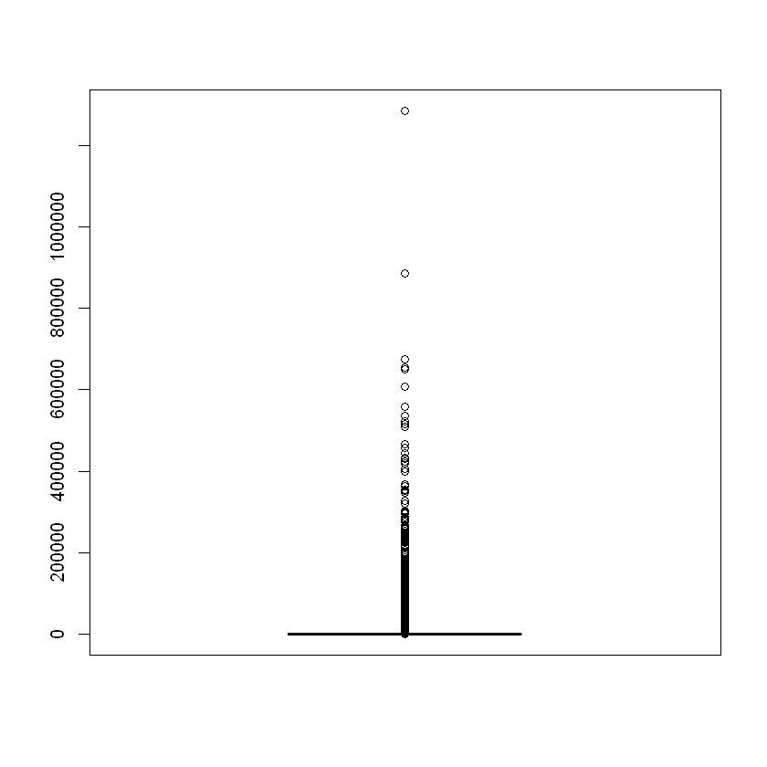
# Wie viele und welche Katzen haben einen timelag > x?
which(overview_cats$max >= 300000)
length(which(overview_cats$max >= 300000))# globales Minimum und Maximum des timelag
min(cats_all_joined$timelag, na.rm = TRUE)
max(cats_all_joined$timelag, na.rm = TRUE)Da bei allen Katzen mehr oder weniger grosse Ausfälle in der GPS-Aufzeichnung vorliegen, werden keine Katzen als Ganzes für die Analyse entfernt. Grosse timelags sind jedoch für die Analyse der Geschwindigkeit und Distanz nicht geeignet. Deshalb sollen unzureichende Segmente für die Analyse ausgeschlossen werden.
# Wir schauen mal, wie viele Segmente einen timelag von > 5 Minuten aufweisen
max_lag_allowed <- 5 * 60cats_all_joined_timelag <- cats_all_joined %>%
mutate(valid_segment = !is.na(timelag) & timelag <= max_lag_allowed)head(cats_all_joined_timelag)| datetime | cat_id | geometry | day | time | daytime | timelag | valid_segment |
|---|---|---|---|---|---|---|---|
| <dttm> | <int> | <POINT [m]> | <dbl> | <time> | <chr> | <dbl> | <lgl> |
| 2021-05-03 01:57:57 | 1 | POINT (263866.2 6620083) | 3 | 01:57:57 | night | 145 | TRUE |
| 2021-05-03 02:00:22 | 1 | POINT (263865.3 6620099) | 3 | 02:00:22 | night | 725 | FALSE |
| 2021-05-03 02:12:27 | 1 | POINT (263866.9 6620108) | 3 | 02:12:27 | night | 145 | TRUE |
| 2021-05-03 02:14:52 | 1 | POINT (263873.9 6620101) | 3 | 02:14:52 | night | 403 | FALSE |
| 2021-05-03 02:21:35 | 1 | POINT (263885.1 6620139) | 3 | 02:21:35 | night | 145 | TRUE |
| 2021-05-03 02:24:00 | 1 | POINT (263890.1 6620154) | 3 | 02:24:00 | night | 145 | TRUE |
# valide Segmente je Katze
cat_timelag_quality <- cats_all_joined_timelag %>%
st_drop_geometry() %>%
group_by(cat_id) %>%
summarise(
n_total = n(),
n_valid_segments = sum(valid_segment, na.rm = TRUE),
share_valid_segments = mean(valid_segment, na.rm = TRUE),
n_invalid_segments = sum(!valid_segment, na.rm = TRUE)
) %>%
arrange(share_valid_segments)
cat_timelag_quality| cat_id | n_total | n_valid_segments | share_valid_segments | n_invalid_segments |
|---|---|---|---|---|
| <int> | <int> | <int> | <dbl> | <int> |
| 13 | 387 | 333 | 0.8604651 | 54 |
| 28 | 3961 | 3522 | 0.8891694 | 439 |
| 1 | 6412 | 5708 | 0.8902059 | 704 |
| 14 | 3583 | 3248 | 0.9065029 | 335 |
| 92 | 2039 | 1853 | 0.9087788 | 186 |
| 19 | 407 | 371 | 0.9115479 | 36 |
| 26 | 2641 | 2420 | 0.9163196 | 221 |
| 58 | 7368 | 6763 | 0.9178882 | 605 |
| 25 | 2553 | 2363 | 0.9255778 | 190 |
| 62 | 6690 | 6226 | 0.9306428 | 464 |
| 66 | 4450 | 4142 | 0.9307865 | 308 |
| 45 | 1348 | 1255 | 0.9310089 | 93 |
| 18 | 484 | 451 | 0.9318182 | 33 |
| 39 | 4249 | 3971 | 0.9345728 | 278 |
| 73 | 941 | 881 | 0.9362380 | 60 |
| 89 | 2464 | 2308 | 0.9366883 | 156 |
| 64 | 5626 | 5272 | 0.9370779 | 354 |
| 32 | 1371 | 1287 | 0.9387309 | 84 |
| 81 | 4063 | 3837 | 0.9443761 | 226 |
| 33 | 4000 | 3780 | 0.9450000 | 220 |
| 21 | 2109 | 1994 | 0.9454718 | 115 |
| 79 | 4464 | 4222 | 0.9457885 | 242 |
| 46 | 1761 | 1667 | 0.9466212 | 94 |
| 12 | 3161 | 2993 | 0.9468523 | 168 |
| 2 | 4480 | 4251 | 0.9488839 | 229 |
| 27 | 5067 | 4811 | 0.9494770 | 256 |
| 31 | 3183 | 3024 | 0.9500471 | 159 |
| 35 | 3835 | 3646 | 0.9507171 | 189 |
| 72 | 2224 | 2116 | 0.9514388 | 108 |
| 47 | 2122 | 2020 | 0.9519321 | 102 |
| ⋮ | ⋮ | ⋮ | ⋮ | ⋮ |
| 51 | 4868 | 4726 | 0.9708299 | 142 |
| 3 | 4319 | 4196 | 0.9715212 | 123 |
| 30 | 3078 | 2992 | 0.9720598 | 86 |
| 76 | 5497 | 5346 | 0.9725305 | 151 |
| 9 | 6529 | 6358 | 0.9738092 | 171 |
| 23 | 5212 | 5076 | 0.9739064 | 136 |
| 67 | 3909 | 3810 | 0.9746738 | 99 |
| 49 | 5655 | 5512 | 0.9747126 | 143 |
| 57 | 6350 | 6192 | 0.9751181 | 158 |
| 10 | 1626 | 1586 | 0.9753998 | 40 |
| 34 | 4895 | 4775 | 0.9754852 | 120 |
| 68 | 9307 | 9081 | 0.9757172 | 226 |
| 36 | 3948 | 3855 | 0.9764438 | 93 |
| 4 | 5923 | 5785 | 0.9767010 | 138 |
| 85 | 10946 | 10695 | 0.9770692 | 251 |
| 52 | 6655 | 6505 | 0.9774606 | 150 |
| 70 | 7903 | 7733 | 0.9784892 | 170 |
| 50 | 5446 | 5333 | 0.9792508 | 113 |
| 78 | 3024 | 2962 | 0.9794974 | 62 |
| 37 | 1090 | 1068 | 0.9798165 | 22 |
| 41 | 7677 | 7527 | 0.9804611 | 150 |
| 42 | 7075 | 6961 | 0.9838869 | 114 |
| 83 | 11542 | 11378 | 0.9857910 | 164 |
| 7 | 6346 | 6256 | 0.9858178 | 90 |
| 5 | 11075 | 10951 | 0.9888036 | 124 |
| 87 | 5208 | 5151 | 0.9890553 | 57 |
| 15 | 9805 | 9704 | 0.9896991 | 101 |
| 61 | 7547 | 7472 | 0.9900623 | 75 |
| 88 | 6046 | 5991 | 0.9909031 | 55 |
| 60 | 6761 | 6709 | 0.9923088 | 52 |
min(cat_timelag_quality$share_valid_segments)
median(cat_timelag_quality$share_valid_segments)
mean(cat_timelag_quality$share_valid_segments)Die obigen Tabellen zeigen, dass bei einem Grenzwert für ein valides Segment von 5 Minuten auch bei der “schlechtesten” Katze über 86% der Segmente gültig sind. Daher verzichten wir darauf, Katzen ganz zu entfernen, und schliessen alle Segmente mit einem timelag von > 5 Minuten für die Analyse aus.
In diesem Schritt wird die Spalte timelag aller invaliden Segmente auf NA gesetzt.
head(cats_all_joined_timelag)| datetime | cat_id | geometry | day | time | daytime | timelag | valid_segment |
|---|---|---|---|---|---|---|---|
| <dttm> | <int> | <POINT [m]> | <dbl> | <time> | <chr> | <dbl> | <lgl> |
| 2021-05-03 01:57:57 | 1 | POINT (263866.2 6620083) | 3 | 01:57:57 | night | 145 | TRUE |
| 2021-05-03 02:00:22 | 1 | POINT (263865.3 6620099) | 3 | 02:00:22 | night | 725 | FALSE |
| 2021-05-03 02:12:27 | 1 | POINT (263866.9 6620108) | 3 | 02:12:27 | night | 145 | TRUE |
| 2021-05-03 02:14:52 | 1 | POINT (263873.9 6620101) | 3 | 02:14:52 | night | 403 | FALSE |
| 2021-05-03 02:21:35 | 1 | POINT (263885.1 6620139) | 3 | 02:21:35 | night | 145 | TRUE |
| 2021-05-03 02:24:00 | 1 | POINT (263890.1 6620154) | 3 | 02:24:00 | night | 145 | TRUE |
cats_all_joined_timelag_segm <- cats_all_joined_timelag %>%
mutate(timelag = if_else(valid_segment == TRUE, timelag, NA))head(cats_all_joined_timelag_segm)| datetime | cat_id | geometry | day | time | daytime | timelag | valid_segment |
|---|---|---|---|---|---|---|---|
| <dttm> | <int> | <POINT [m]> | <dbl> | <time> | <chr> | <dbl> | <lgl> |
| 2021-05-03 01:57:57 | 1 | POINT (263866.2 6620083) | 3 | 01:57:57 | night | 145 | TRUE |
| 2021-05-03 02:00:22 | 1 | POINT (263865.3 6620099) | 3 | 02:00:22 | night | NA | FALSE |
| 2021-05-03 02:12:27 | 1 | POINT (263866.9 6620108) | 3 | 02:12:27 | night | 145 | TRUE |
| 2021-05-03 02:14:52 | 1 | POINT (263873.9 6620101) | 3 | 02:14:52 | night | NA | FALSE |
| 2021-05-03 02:21:35 | 1 | POINT (263885.1 6620139) | 3 | 02:21:35 | night | 145 | TRUE |
| 2021-05-03 02:24:00 | 1 | POINT (263890.1 6620154) | 3 | 02:24:00 | night | 145 | TRUE |
distance_by_element <- function(later, now){
as.numeric(
st_distance(later, now, by_element = TRUE)
)
}later <- lead(cats_all_joined_timelag_segm$geometry)
now <- cats_all_joined_timelag_segm$geometry# Variable umbenennen, alte entfernen
cats_all_joined_dist <- cats_all_joined_timelag_segm
remove(cats_all_joined_timelag_segm)cats_all_joined_dist$steplength <- distance_by_element(later, now)
head(cats_all_joined_dist)| datetime | cat_id | geometry | day | time | daytime | timelag | valid_segment | steplength |
|---|---|---|---|---|---|---|---|---|
| <dttm> | <int> | <POINT [m]> | <dbl> | <time> | <chr> | <dbl> | <lgl> | <dbl> |
| 2021-05-03 01:57:57 | 1 | POINT (263866.2 6620083) | 3 | 01:57:57 | night | 145 | TRUE | 15.822602 |
| 2021-05-03 02:00:22 | 1 | POINT (263865.3 6620099) | 3 | 02:00:22 | night | NA | FALSE | 9.409764 |
| 2021-05-03 02:12:27 | 1 | POINT (263866.9 6620108) | 3 | 02:12:27 | night | 145 | TRUE | 10.123266 |
| 2021-05-03 02:14:52 | 1 | POINT (263873.9 6620101) | 3 | 02:14:52 | night | NA | FALSE | 40.079761 |
| 2021-05-03 02:21:35 | 1 | POINT (263885.1 6620139) | 3 | 02:21:35 | night | 145 | TRUE | 16.201164 |
| 2021-05-03 02:24:00 | 1 | POINT (263890.1 6620154) | 3 | 02:24:00 | night | 145 | TRUE | 31.386660 |
cats_all_joined_dist_segm <- cats_all_joined_dist %>%
mutate(steplength = if_else(valid_segment == TRUE, steplength, NA))
remove(cats_all_joined_dist)head(cats_all_joined_dist_segm)| datetime | cat_id | geometry | day | time | daytime | timelag | valid_segment | steplength |
|---|---|---|---|---|---|---|---|---|
| <dttm> | <int> | <POINT [m]> | <dbl> | <time> | <chr> | <dbl> | <lgl> | <dbl> |
| 2021-05-03 01:57:57 | 1 | POINT (263866.2 6620083) | 3 | 01:57:57 | night | 145 | TRUE | 15.82260 |
| 2021-05-03 02:00:22 | 1 | POINT (263865.3 6620099) | 3 | 02:00:22 | night | NA | FALSE | NA |
| 2021-05-03 02:12:27 | 1 | POINT (263866.9 6620108) | 3 | 02:12:27 | night | 145 | TRUE | 10.12327 |
| 2021-05-03 02:14:52 | 1 | POINT (263873.9 6620101) | 3 | 02:14:52 | night | NA | FALSE | NA |
| 2021-05-03 02:21:35 | 1 | POINT (263885.1 6620139) | 3 | 02:21:35 | night | 145 | TRUE | 16.20116 |
| 2021-05-03 02:24:00 | 1 | POINT (263890.1 6620154) | 3 | 02:24:00 | night | 145 | TRUE | 31.38666 |
min(cats_all_joined_dist_segm$steplength, na.rm = TRUE)
max(cats_all_joined_dist_segm$steplength, na.rm = TRUE)cats_all_joined_speed <- cats_all_joined_dist_segm %>%
mutate(speed = steplength/timelag)
remove(cats_all_joined_dist_segm)head(cats_all_joined_speed)| datetime | cat_id | geometry | day | time | daytime | timelag | valid_segment | steplength | speed |
|---|---|---|---|---|---|---|---|---|---|
| <dttm> | <int> | <POINT [m]> | <dbl> | <time> | <chr> | <dbl> | <lgl> | <dbl> | <dbl> |
| 2021-05-03 01:57:57 | 1 | POINT (263866.2 6620083) | 3 | 01:57:57 | night | 145 | TRUE | 15.82260 | 0.10912139 |
| 2021-05-03 02:00:22 | 1 | POINT (263865.3 6620099) | 3 | 02:00:22 | night | NA | FALSE | NA | NA |
| 2021-05-03 02:12:27 | 1 | POINT (263866.9 6620108) | 3 | 02:12:27 | night | 145 | TRUE | 10.12327 | 0.06981562 |
| 2021-05-03 02:14:52 | 1 | POINT (263873.9 6620101) | 3 | 02:14:52 | night | NA | FALSE | NA | NA |
| 2021-05-03 02:21:35 | 1 | POINT (263885.1 6620139) | 3 | 02:21:35 | night | 145 | TRUE | 16.20116 | 0.11173217 |
| 2021-05-03 02:24:00 | 1 | POINT (263890.1 6620154) | 3 | 02:24:00 | night | 145 | TRUE | 31.38666 | 0.21645972 |
min(cats_all_joined_speed$speed, na.rm = TRUE)
max(cats_all_joined_speed$speed, na.rm = TRUE)head(cats_all_joined_speed)| datetime | cat_id | geometry | day | time | daytime | timelag | valid_segment | steplength | speed |
|---|---|---|---|---|---|---|---|---|---|
| <dttm> | <int> | <POINT [m]> | <dbl> | <time> | <chr> | <dbl> | <lgl> | <dbl> | <dbl> |
| 2021-05-03 01:57:57 | 1 | POINT (263866.2 6620083) | 3 | 01:57:57 | night | 145 | TRUE | 15.82260 | 0.10912139 |
| 2021-05-03 02:00:22 | 1 | POINT (263865.3 6620099) | 3 | 02:00:22 | night | NA | FALSE | NA | NA |
| 2021-05-03 02:12:27 | 1 | POINT (263866.9 6620108) | 3 | 02:12:27 | night | 145 | TRUE | 10.12327 | 0.06981562 |
| 2021-05-03 02:14:52 | 1 | POINT (263873.9 6620101) | 3 | 02:14:52 | night | NA | FALSE | NA | NA |
| 2021-05-03 02:21:35 | 1 | POINT (263885.1 6620139) | 3 | 02:21:35 | night | 145 | TRUE | 16.20116 | 0.11173217 |
| 2021-05-03 02:24:00 | 1 | POINT (263890.1 6620154) | 3 | 02:24:00 | night | 145 | TRUE | 31.38666 | 0.21645972 |
# daytime als Faktor
cats_rq1 <- cats_all_joined_speed %>%
mutate(daytime = factor(daytime, levels = c("dawn", "day", "dusk", "night")))str(cats_rq1)sf [426,943 × 10] (S3: sf/tbl_df/tbl/data.frame)
$ datetime : POSIXct[1:426943], format: "2021-05-03 01:57:57" "2021-05-03 02:00:22" ...
$ cat_id : int [1:426943] 1 1 1 1 1 1 1 1 1 1 ...
$ geometry :sfc_POINT of length 426943; first list element: 'XY' num [1:2] 263866 6620083
$ day : num [1:426943] 3 3 3 3 3 3 3 3 3 3 ...
$ time : 'hms' num [1:426943] 01:57:57 02:00:22 02:12:27 02:14:52 ...
..- attr(*, "units")= chr "secs"
$ daytime : Factor w/ 4 levels "dawn","day","dusk",..: 4 4 4 4 4 4 4 4 4 4 ...
$ timelag : num [1:426943] 145 NA 145 NA 145 145 145 145 290 146 ...
$ valid_segment: logi [1:426943] TRUE FALSE TRUE FALSE TRUE TRUE ...
$ steplength : num [1:426943] 15.8 NA 10.1 NA 16.2 ...
$ speed : num [1:426943] 0.1091 NA 0.0698 NA 0.1117 ...
- attr(*, "sf_column")= chr "geometry"
- attr(*, "agr")= Factor w/ 3 levels "constant","aggregate",..: NA NA NA NA NA NA NA NA NA
..- attr(*, "names")= chr [1:9] "datetime" "cat_id" "day" "time" ...# Segmente filtern --> nur valide
cats_rq1_segments <- cats_rq1 %>%
filter(valid_segment == TRUE)Wurden GPS-Daten auch während Ruhezeiten aufgezeichnet oder können die grossen Unterbrüche dadurch erklärt werden?
resting <- cats_all_joined_speed %>%
filter(speed == 0) %>%
nrow()
resting
all <- cats_all_joined_speed %>%
nrow()
all
# Anteil der Punkte mit speed = 0 an Gesamtzahl der validen GPS-Punkte
resting/allInterpretation:
24.3% aller validen Segmente haben einen speed == 0 –> dies weist darauf hin, dass das GPS-Tracking auch während Ruhezeiten aktiv war.
# Geschwindigkeit nach Tageszeit zusammenfassen (pro Katze)
rq1_speed_summary_per_cat <- cats_rq1_segments %>%
st_drop_geometry() %>%
group_by(cat_id, daytime) %>%
summarise(
n_segments = n(),
mean_speed_m_s = mean(speed, na.rm = TRUE),
median_speed_m_s = median(speed, na.rm = TRUE),
q25_speed_m_s = quantile(speed, 0.25, na.rm = TRUE),
q75_speed_m_s = quantile(speed, 0.75, na.rm = TRUE),
.groups = "drop"
)
rq1_speed_summary_per_cat| cat_id | daytime | n_segments | mean_speed_m_s | median_speed_m_s | q25_speed_m_s | q75_speed_m_s |
|---|---|---|---|---|---|---|
| <int> | <fct> | <int> | <dbl> | <dbl> | <dbl> | <dbl> |
| 1 | dawn | 350 | 0.101719415 | 0.07660674 | 0.0304660637 | 0.13843747 |
| 1 | day | 3907 | 0.093788694 | 0.06474103 | 0.0061355249 | 0.13429612 |
| 1 | dusk | 356 | 0.086767160 | 0.05295970 | 0.0000000000 | 0.11618250 |
| 1 | night | 1095 | 0.104285704 | 0.07543685 | 0.0343196210 | 0.14291129 |
| 2 | dawn | 192 | 0.067786364 | 0.04121141 | 0.0000000000 | 0.09171404 |
| 2 | day | 3031 | 0.077075245 | 0.05364173 | 0.0219910558 | 0.10085581 |
| 2 | dusk | 182 | 0.116884054 | 0.07176842 | 0.0402054815 | 0.17882177 |
| 2 | night | 846 | 0.098269057 | 0.06555352 | 0.0311775319 | 0.12317365 |
| 3 | dawn | 6 | 0.073586233 | 0.07372218 | 0.0547615758 | 0.09575160 |
| 3 | day | 4140 | 0.079863963 | 0.05468016 | 0.0143414341 | 0.10991593 |
| 3 | dusk | 40 | 0.003152396 | 0.00000000 | 0.0000000000 | 0.00000000 |
| 3 | night | 10 | 0.012103187 | 0.00000000 | 0.0000000000 | 0.00000000 |
| 4 | dawn | 487 | 0.073580556 | 0.04045010 | 0.0042675302 | 0.08412732 |
| 4 | day | 2446 | 0.100367265 | 0.05874284 | 0.0223625761 | 0.12700755 |
| 4 | dusk | 528 | 0.121715136 | 0.06837277 | 0.0270375939 | 0.17579435 |
| 4 | night | 2324 | 0.135229407 | 0.07218585 | 0.0307566468 | 0.18859578 |
| 5 | dawn | 598 | 0.060852325 | 0.03830144 | 0.0058880606 | 0.08364952 |
| 5 | day | 7421 | 0.069588419 | 0.04323782 | 0.0045132490 | 0.08851314 |
| 5 | dusk | 504 | 0.133049035 | 0.07988382 | 0.0343696462 | 0.19107111 |
| 5 | night | 2428 | 0.124631090 | 0.07157059 | 0.0347798984 | 0.15978802 |
| 6 | dawn | 56 | 0.070436576 | 0.06637590 | 0.0254224746 | 0.09912732 |
| 6 | day | 2438 | 0.061469834 | 0.04700016 | 0.0008812046 | 0.09103367 |
| 6 | dusk | 35 | 0.023119663 | 0.00000000 | 0.0000000000 | 0.00000000 |
| 6 | night | 82 | 0.071070465 | 0.05100157 | 0.0000000000 | 0.09975762 |
| 7 | dawn | 179 | 0.061053692 | 0.04538417 | 0.0000000000 | 0.09871744 |
| 7 | day | 4964 | 0.062886391 | 0.04320545 | 0.0000000000 | 0.09257650 |
| 7 | dusk | 155 | 0.069511554 | 0.04513398 | 0.0000000000 | 0.10329361 |
| 7 | night | 958 | 0.059469392 | 0.04733262 | 0.0000000000 | 0.08871283 |
| 8 | dawn | 350 | 0.068492872 | 0.03671696 | 0.0000000000 | 0.08976194 |
| 8 | day | 1456 | 0.097597648 | 0.05005545 | 0.0000000000 | 0.13365033 |
| ⋮ | ⋮ | ⋮ | ⋮ | ⋮ | ⋮ | ⋮ |
| 85 | dawn | 320 | 0.04240484 | 0.01203164 | 0.00000000 | 0.06536910 |
| 85 | day | 8140 | 0.06100498 | 0.04397189 | 0.00000000 | 0.09195127 |
| 85 | dusk | 474 | 0.08267196 | 0.04205808 | 0.00000000 | 0.09807601 |
| 85 | night | 1761 | 0.04389653 | 0.00000000 | 0.00000000 | 0.06662323 |
| 86 | dawn | 124 | 0.05769497 | 0.04478418 | 0.00000000 | 0.08482623 |
| 86 | day | 2417 | 0.09425882 | 0.06427617 | 0.02640286 | 0.12077107 |
| 86 | dusk | 99 | 0.17936853 | 0.14026157 | 0.05579621 | 0.25109921 |
| 86 | night | 300 | 0.09780843 | 0.05540868 | 0.01907994 | 0.11704078 |
| 87 | dawn | 341 | 0.07567331 | 0.05418580 | 0.02101901 | 0.10709198 |
| 87 | day | 2209 | 0.10698145 | 0.07830413 | 0.03901767 | 0.14880685 |
| 87 | dusk | 543 | 0.14285433 | 0.08671087 | 0.04028368 | 0.19894408 |
| 87 | night | 2058 | 0.12811041 | 0.08321565 | 0.03615908 | 0.17760504 |
| 88 | dawn | 526 | 0.08776966 | 0.07073195 | 0.02179737 | 0.12978147 |
| 88 | day | 1989 | 0.08569051 | 0.05978556 | 0.01823907 | 0.11405243 |
| 88 | dusk | 650 | 0.06259082 | 0.03565292 | 0.00000000 | 0.08722300 |
| 88 | night | 2826 | 0.08916403 | 0.05334560 | 0.00000000 | 0.11586951 |
| 89 | dawn | 45 | 0.12536071 | 0.09103834 | 0.04012010 | 0.20048585 |
| 89 | day | 2253 | 0.07934573 | 0.06107188 | 0.02372983 | 0.11179259 |
| 89 | night | 10 | 0.17337589 | 0.15364363 | 0.09430916 | 0.22801332 |
| 90 | dawn | 108 | 0.07192794 | 0.04196896 | 0.00000000 | 0.11089162 |
| 90 | day | 6064 | 0.07123244 | 0.04686908 | 0.00000000 | 0.09695744 |
| 90 | dusk | 174 | 0.06011620 | 0.02704073 | 0.00000000 | 0.09190360 |
| 90 | night | 978 | 0.05242361 | 0.02589895 | 0.00000000 | 0.07475808 |
| 91 | day | 3478 | 0.06512648 | 0.05113566 | 0.01542081 | 0.09188528 |
| 91 | dusk | 211 | 0.06134367 | 0.04529662 | 0.01308280 | 0.08775376 |
| 91 | night | 81 | 0.07932000 | 0.06579523 | 0.04312951 | 0.11700540 |
| 92 | dawn | 68 | 0.08435496 | 0.05688513 | 0.02419056 | 0.11913248 |
| 92 | day | 1728 | 0.07157262 | 0.05797875 | 0.02691518 | 0.09836089 |
| 92 | dusk | 17 | 0.06727165 | 0.07153119 | 0.00000000 | 0.10543295 |
| 92 | night | 40 | 0.06787161 | 0.04929537 | 0.01498898 | 0.07979136 |
Da untersucht wird, zu welcher Tageszeit Katzen am aktivsten sind (speed & distance) werden für die Analyse nur Katzen beibehalten, welche während allen 4 Tageszeiten gültige Segmente aufweisen.
# wie viele Katzen haben nicht 4 Tageszeiten?
rq1_speed_summary_per_cat %>%
count(cat_id) %>%
filter(n < 4) %>%
nrow()# Katzen mit <4 Tageszeiten in Variable speichern
cats_less_4_daytimes <- rq1_speed_summary_per_cat %>%
count(cat_id) %>%
filter(n < 4) %>%
pull(cat_id)
cats_less_4_daytimeshead(cats_rq1_segments)| datetime | cat_id | geometry | day | time | daytime | timelag | valid_segment | steplength | speed |
|---|---|---|---|---|---|---|---|---|---|
| <dttm> | <int> | <POINT [m]> | <dbl> | <time> | <fct> | <dbl> | <lgl> | <dbl> | <dbl> |
| 2021-05-03 01:57:57 | 1 | POINT (263866.2 6620083) | 3 | 01:57:57 | night | 145 | TRUE | 15.822602 | 0.10912139 |
| 2021-05-03 02:12:27 | 1 | POINT (263866.9 6620108) | 3 | 02:12:27 | night | 145 | TRUE | 10.123266 | 0.06981562 |
| 2021-05-03 02:21:35 | 1 | POINT (263885.1 6620139) | 3 | 02:21:35 | night | 145 | TRUE | 16.201164 | 0.11173217 |
| 2021-05-03 02:24:00 | 1 | POINT (263890.1 6620154) | 3 | 02:24:00 | night | 145 | TRUE | 31.386660 | 0.21645972 |
| 2021-05-03 02:26:25 | 1 | POINT (263859.3 6620148) | 3 | 02:26:25 | night | 145 | TRUE | 14.221900 | 0.09808207 |
| 2021-05-03 02:28:50 | 1 | POINT (263871 6620140) | 3 | 02:28:50 | night | 145 | TRUE | 8.209636 | 0.05661818 |
cats_rq1_segments_filtered <- cats_rq1_segments %>%
filter(!cat_id %in% cats_less_4_daytimes)
length(unique(cats_rq1_segments_filtered$cat_id))How does speed vary between times of the day
Speed vergleichen über mean_speed_m_s oder median_speed_m_s pro Katze und Tageszeit.
# Geschwindigkeit nach Tageszeit zusammenfassen (über alle Katzen mit 4 Tageszeiten)
rq1_speed_summary_filtered_cats <- cats_rq1_segments_filtered %>%
st_drop_geometry() %>%
group_by(daytime) %>%
summarise(
n_segments = n(),
mean_speed_m_s = mean(speed, na.rm = TRUE),
median_speed_m_s = median(speed, na.rm = TRUE),
q25_speed_m_s = quantile(speed, 0.25, na.rm = TRUE),
q75_speed_m_s = quantile(speed, 0.75, na.rm = TRUE),
.groups = "drop"
)
rq1_speed_summary_filtered_cats| daytime | n_segments | mean_speed_m_s | median_speed_m_s | q25_speed_m_s | q75_speed_m_s |
|---|---|---|---|---|---|
| <fct> | <int> | <dbl> | <dbl> | <dbl> | <dbl> |
| dawn | 14546 | 0.07075108 | 0.04432652 | 0.000000000 | 0.09576717 |
| day | 253600 | 0.07324280 | 0.04745913 | 0.000000000 | 0.09870204 |
| dusk | 18830 | 0.09683369 | 0.05564131 | 0.010031451 | 0.12772634 |
| night | 72862 | 0.09277778 | 0.05406354 | 0.007990731 | 0.11886209 |
Der mittlere speed / Medianspeed ist während der Abenddämmerung und der Nacht höher als während der Morgendämmerung oder tagsüber. Es zeigt sich eine höhere Aktivität in Bezug aus das Tempo der Katzen während dusk/night.
# Geschwindigkeit nach Tageszeit zusammenfassen (pro Katze; nur für Katzen mit 4 Tageszeiten)
rq1_speed_summary_per_cat_filtered <- cats_rq1_segments_filtered %>%
st_drop_geometry() %>%
group_by(cat_id, daytime) %>%
summarise(
n_segments = n(),
mean_speed_m_s = mean(speed, na.rm = TRUE),
median_speed_m_s = median(speed, na.rm = TRUE),
q25_speed_m_s = quantile(speed, 0.25, na.rm = TRUE),
q75_speed_m_s = quantile(speed, 0.75, na.rm = TRUE),
.groups = "drop"
)
rq1_speed_summary_per_cat_filtered| cat_id | daytime | n_segments | mean_speed_m_s | median_speed_m_s | q25_speed_m_s | q75_speed_m_s |
|---|---|---|---|---|---|---|
| <int> | <fct> | <int> | <dbl> | <dbl> | <dbl> | <dbl> |
| 1 | dawn | 350 | 0.101719415 | 0.07660674 | 0.0304660637 | 0.13843747 |
| 1 | day | 3907 | 0.093788694 | 0.06474103 | 0.0061355249 | 0.13429612 |
| 1 | dusk | 356 | 0.086767160 | 0.05295970 | 0.0000000000 | 0.11618250 |
| 1 | night | 1095 | 0.104285704 | 0.07543685 | 0.0343196210 | 0.14291129 |
| 2 | dawn | 192 | 0.067786364 | 0.04121141 | 0.0000000000 | 0.09171404 |
| 2 | day | 3031 | 0.077075245 | 0.05364173 | 0.0219910558 | 0.10085581 |
| 2 | dusk | 182 | 0.116884054 | 0.07176842 | 0.0402054815 | 0.17882177 |
| 2 | night | 846 | 0.098269057 | 0.06555352 | 0.0311775319 | 0.12317365 |
| 3 | dawn | 6 | 0.073586233 | 0.07372218 | 0.0547615758 | 0.09575160 |
| 3 | day | 4140 | 0.079863963 | 0.05468016 | 0.0143414341 | 0.10991593 |
| 3 | dusk | 40 | 0.003152396 | 0.00000000 | 0.0000000000 | 0.00000000 |
| 3 | night | 10 | 0.012103187 | 0.00000000 | 0.0000000000 | 0.00000000 |
| 4 | dawn | 487 | 0.073580556 | 0.04045010 | 0.0042675302 | 0.08412732 |
| 4 | day | 2446 | 0.100367265 | 0.05874284 | 0.0223625761 | 0.12700755 |
| 4 | dusk | 528 | 0.121715136 | 0.06837277 | 0.0270375939 | 0.17579435 |
| 4 | night | 2324 | 0.135229407 | 0.07218585 | 0.0307566468 | 0.18859578 |
| 5 | dawn | 598 | 0.060852325 | 0.03830144 | 0.0058880606 | 0.08364952 |
| 5 | day | 7421 | 0.069588419 | 0.04323782 | 0.0045132490 | 0.08851314 |
| 5 | dusk | 504 | 0.133049035 | 0.07988382 | 0.0343696462 | 0.19107111 |
| 5 | night | 2428 | 0.124631090 | 0.07157059 | 0.0347798984 | 0.15978802 |
| 6 | dawn | 56 | 0.070436576 | 0.06637590 | 0.0254224746 | 0.09912732 |
| 6 | day | 2438 | 0.061469834 | 0.04700016 | 0.0008812046 | 0.09103367 |
| 6 | dusk | 35 | 0.023119663 | 0.00000000 | 0.0000000000 | 0.00000000 |
| 6 | night | 82 | 0.071070465 | 0.05100157 | 0.0000000000 | 0.09975762 |
| 7 | dawn | 179 | 0.061053692 | 0.04538417 | 0.0000000000 | 0.09871744 |
| 7 | day | 4964 | 0.062886391 | 0.04320545 | 0.0000000000 | 0.09257650 |
| 7 | dusk | 155 | 0.069511554 | 0.04513398 | 0.0000000000 | 0.10329361 |
| 7 | night | 958 | 0.059469392 | 0.04733262 | 0.0000000000 | 0.08871283 |
| 8 | dawn | 350 | 0.068492872 | 0.03671696 | 0.0000000000 | 0.08976194 |
| 8 | day | 1456 | 0.097597648 | 0.05005545 | 0.0000000000 | 0.13365033 |
| ⋮ | ⋮ | ⋮ | ⋮ | ⋮ | ⋮ | ⋮ |
| 83 | dusk | 594 | 0.07319445 | 0.04906943 | 0.019844505 | 0.09104175 |
| 83 | night | 2915 | 0.06118887 | 0.04357855 | 0.007178292 | 0.08060146 |
| 84 | dawn | 308 | 0.08064576 | 0.03891754 | 0.000000000 | 0.11557103 |
| 84 | day | 5901 | 0.07809946 | 0.05156525 | 0.010464770 | 0.10883859 |
| 84 | dusk | 567 | 0.13786796 | 0.08999943 | 0.023850922 | 0.22434365 |
| 84 | night | 1484 | 0.12344595 | 0.07553637 | 0.013371897 | 0.19475834 |
| 85 | dawn | 320 | 0.04240484 | 0.01203164 | 0.000000000 | 0.06536910 |
| 85 | day | 8140 | 0.06100498 | 0.04397189 | 0.000000000 | 0.09195127 |
| 85 | dusk | 474 | 0.08267196 | 0.04205808 | 0.000000000 | 0.09807601 |
| 85 | night | 1761 | 0.04389653 | 0.00000000 | 0.000000000 | 0.06662323 |
| 86 | dawn | 124 | 0.05769497 | 0.04478418 | 0.000000000 | 0.08482623 |
| 86 | day | 2417 | 0.09425882 | 0.06427617 | 0.026402861 | 0.12077107 |
| 86 | dusk | 99 | 0.17936853 | 0.14026157 | 0.055796206 | 0.25109921 |
| 86 | night | 300 | 0.09780843 | 0.05540868 | 0.019079937 | 0.11704078 |
| 87 | dawn | 341 | 0.07567331 | 0.05418580 | 0.021019009 | 0.10709198 |
| 87 | day | 2209 | 0.10698145 | 0.07830413 | 0.039017669 | 0.14880685 |
| 87 | dusk | 543 | 0.14285433 | 0.08671087 | 0.040283676 | 0.19894408 |
| 87 | night | 2058 | 0.12811041 | 0.08321565 | 0.036159079 | 0.17760504 |
| 88 | dawn | 526 | 0.08776966 | 0.07073195 | 0.021797373 | 0.12978147 |
| 88 | day | 1989 | 0.08569051 | 0.05978556 | 0.018239072 | 0.11405243 |
| 88 | dusk | 650 | 0.06259082 | 0.03565292 | 0.000000000 | 0.08722300 |
| 88 | night | 2826 | 0.08916403 | 0.05334560 | 0.000000000 | 0.11586951 |
| 90 | dawn | 108 | 0.07192794 | 0.04196896 | 0.000000000 | 0.11089162 |
| 90 | day | 6064 | 0.07123244 | 0.04686908 | 0.000000000 | 0.09695744 |
| 90 | dusk | 174 | 0.06011620 | 0.02704073 | 0.000000000 | 0.09190360 |
| 90 | night | 978 | 0.05242361 | 0.02589895 | 0.000000000 | 0.07475808 |
| 92 | dawn | 68 | 0.08435496 | 0.05688513 | 0.024190563 | 0.11913248 |
| 92 | day | 1728 | 0.07157262 | 0.05797875 | 0.026915181 | 0.09836089 |
| 92 | dusk | 17 | 0.06727165 | 0.07153119 | 0.000000000 | 0.10543295 |
| 92 | night | 40 | 0.06787161 | 0.04929537 | 0.014988979 | 0.07979136 |
# Boxplots der speed-Werte (nur Katzen mit 4 Tageszeiten)
ggplot(rq1_speed_summary_per_cat_filtered, aes(x = daytime, y = mean_speed_m_s)) +
geom_boxplot() +
geom_jitter(width = 0.15, alpha = 0.4) +
labs(
x = "Time of day",
y = "Mean speed per cat (m/s)",
title = "Cat speed by time of day"
) +
theme_minimal()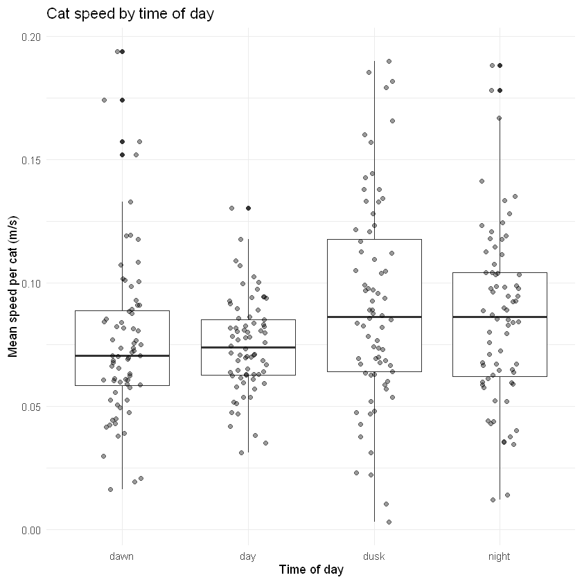
ggplot(rq1_speed_summary_per_cat_filtered, aes(x = daytime, y = mean_speed_m_s)) +
geom_boxplot(
width = 0.5,
outlier.shape = NA,
fill = "grey90",
color = "grey30"
) +
geom_jitter(
width = 0.12,
alpha = 0.35,
size = 1.4,
color = "grey20"
) +
labs(
x = "Time of day",
y = "Mean speed per cat [m/s]",
title = "Cat speed by time of day",
subtitle = "Each point represents one cat"
) +
theme_minimal() +
theme(
panel.grid.minor = element_blank(),
plot.title = element_text(face = "bold")
)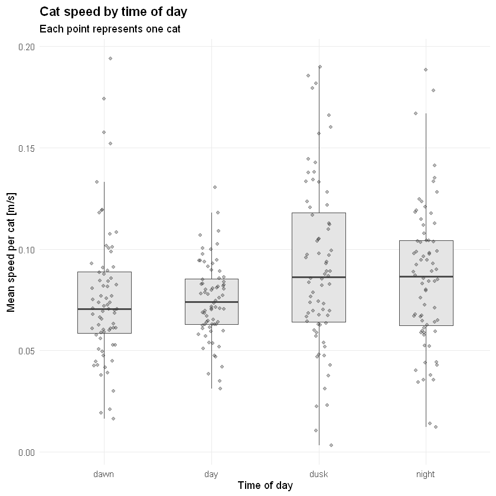
How does traveled distance vary between times of the day
Travelled distance vergleichen über distance_per_hour_m
# Distanz pro Katze und Tageszeit berechnen
rq1_distance_per_cat <- cats_rq1_segments_filtered %>%
st_drop_geometry() %>%
group_by(cat_id, daytime) %>%
summarise(
n_segments = n(),
total_distance_m = sum(steplength, na.rm = TRUE),
total_time_h = sum(timelag, na.rm = TRUE) / 3600,
distance_per_hour_m = total_distance_m / total_time_h,
mean_speed_m_s = total_distance_m / sum(timelag, na.rm = TRUE),
.groups = "drop"
)
rq1_distance_per_cat| cat_id | daytime | n_segments | total_distance_m | total_time_h | distance_per_hour_m | mean_speed_m_s |
|---|---|---|---|---|---|---|
| <int> | <fct> | <int> | <dbl> | <dbl> | <dbl> | <dbl> |
| 1 | dawn | 350 | 4543.65526 | 12.6383333 | 359.51380 | 0.099864945 |
| 1 | day | 3907 | 49422.01283 | 145.6572222 | 339.30355 | 0.094250987 |
| 1 | dusk | 356 | 4163.74805 | 13.2411111 | 314.45609 | 0.087348914 |
| 1 | night | 1095 | 15431.06057 | 41.8080556 | 369.09300 | 0.102525833 |
| 2 | dawn | 192 | 1632.35441 | 6.7033333 | 243.51384 | 0.067642732 |
| 2 | day | 3031 | 29889.23372 | 108.2077778 | 276.22075 | 0.076727987 |
| 2 | dusk | 182 | 2629.87285 | 6.2852778 | 418.41792 | 0.116227200 |
| 2 | night | 846 | 10457.23477 | 29.6358333 | 352.85779 | 0.098016054 |
| 3 | dawn | 6 | 56.60783 | 0.2094444 | 270.27611 | 0.075076698 |
| 3 | day | 4140 | 41284.23629 | 143.0847222 | 288.53001 | 0.080147225 |
| 3 | dusk | 40 | 15.19723 | 1.3422222 | 11.32244 | 0.003145122 |
| 3 | night | 10 | 14.52382 | 0.3333333 | 43.57147 | 0.012103187 |
| 4 | dawn | 487 | 4616.96390 | 17.3383333 | 266.28649 | 0.073968469 |
| 4 | day | 2446 | 31155.89757 | 86.5211111 | 360.09590 | 0.100026640 |
| 4 | dusk | 528 | 8237.08049 | 18.6302778 | 442.13407 | 0.122815019 |
| 4 | night | 2324 | 40447.68472 | 82.2800000 | 491.58586 | 0.136551628 |
| 5 | dawn | 598 | 4678.46512 | 21.1463889 | 221.24180 | 0.061456055 |
| 5 | day | 7421 | 66931.12915 | 263.6536111 | 253.86009 | 0.070516691 |
| 5 | dusk | 504 | 9245.00441 | 18.8644444 | 490.07563 | 0.136132118 |
| 5 | night | 2428 | 41522.68936 | 90.2180556 | 460.24811 | 0.127846697 |
| 6 | dawn | 56 | 488.42877 | 1.9288889 | 253.21768 | 0.070338245 |
| 6 | day | 2438 | 19091.02038 | 86.1877778 | 221.50496 | 0.061529156 |
| 6 | dusk | 35 | 111.66103 | 1.1883333 | 93.96440 | 0.026101222 |
| 6 | night | 82 | 712.41078 | 2.7886111 | 255.47154 | 0.070964318 |
| 7 | dawn | 179 | 1410.50149 | 6.3002778 | 223.87925 | 0.062188682 |
| 7 | day | 4964 | 39535.14281 | 173.5463889 | 227.80735 | 0.063279819 |
| 7 | dusk | 155 | 1425.38320 | 5.4952778 | 259.38329 | 0.072050913 |
| 7 | night | 958 | 7367.38613 | 33.9488889 | 217.01406 | 0.060281683 |
| 8 | dawn | 350 | 3155.09994 | 12.4400000 | 253.62540 | 0.070451499 |
| 8 | day | 1456 | 18164.22084 | 51.1588889 | 355.05503 | 0.098626397 |
| ⋮ | ⋮ | ⋮ | ⋮ | ⋮ | ⋮ | ⋮ |
| 83 | dusk | 594 | 5506.3317 | 20.8916667 | 263.5659 | 0.07321276 |
| 83 | night | 2915 | 22784.3330 | 103.4461111 | 220.2532 | 0.06118143 |
| 84 | dawn | 308 | 3279.8526 | 10.9813889 | 298.6738 | 0.08296493 |
| 84 | day | 5901 | 59313.8190 | 209.6072222 | 282.9760 | 0.07860445 |
| 84 | dusk | 567 | 10145.7075 | 20.1397222 | 503.7660 | 0.13993500 |
| 84 | night | 1484 | 23740.2561 | 52.7222222 | 450.2894 | 0.12508038 |
| 85 | dawn | 320 | 1713.1157 | 11.1088889 | 154.2113 | 0.04283646 |
| 85 | day | 8140 | 64208.8910 | 291.2486111 | 220.4608 | 0.06123910 |
| 85 | dusk | 474 | 5148.0033 | 16.7555556 | 307.2416 | 0.08534488 |
| 85 | night | 1761 | 9736.0596 | 60.7550000 | 160.2512 | 0.04451421 |
| 86 | dawn | 124 | 921.1632 | 4.4613889 | 206.4745 | 0.05735404 |
| 86 | day | 2417 | 29556.9657 | 86.1697222 | 343.0087 | 0.09528020 |
| 86 | dusk | 99 | 2446.8017 | 3.7625000 | 650.3127 | 0.18064243 |
| 86 | night | 300 | 3878.8890 | 10.9438889 | 354.4342 | 0.09845396 |
| 87 | dawn | 341 | 3253.3893 | 11.9225000 | 272.8781 | 0.07579948 |
| 87 | day | 2209 | 29968.7005 | 77.3975000 | 387.2050 | 0.10755695 |
| 87 | dusk | 543 | 9990.6400 | 19.2977778 | 517.7093 | 0.14380815 |
| 87 | night | 2058 | 33926.9793 | 73.1425000 | 463.8477 | 0.12884658 |
| 88 | dawn | 526 | 5797.3239 | 18.3644444 | 315.6820 | 0.08768943 |
| 88 | day | 1989 | 21335.8856 | 69.2950000 | 307.8994 | 0.08552760 |
| 88 | dusk | 650 | 5092.8613 | 22.6008333 | 225.3395 | 0.06259432 |
| 88 | night | 2826 | 31524.0212 | 98.2138889 | 320.9731 | 0.08915921 |
| 90 | dawn | 108 | 1052.3581 | 4.0783333 | 258.0363 | 0.07167676 |
| 90 | day | 6064 | 55744.3150 | 216.9294444 | 256.9698 | 0.07138050 |
| 90 | dusk | 174 | 1321.4913 | 6.0616667 | 218.0079 | 0.06055776 |
| 90 | night | 978 | 6769.8152 | 35.7297222 | 189.4729 | 0.05263137 |
| 92 | dawn | 68 | 711.2904 | 2.3547222 | 302.0698 | 0.08390826 |
| 92 | day | 1728 | 15747.7740 | 61.1502778 | 257.5258 | 0.07153494 |
| 92 | dusk | 17 | 165.6460 | 0.6294444 | 263.1622 | 0.07310060 |
| 92 | night | 40 | 336.0813 | 1.3619444 | 246.7658 | 0.06854605 |
# Distanz nach Tageszeit zusammenfassen
rq1_distance_summary <- rq1_distance_per_cat %>%
group_by(daytime) %>%
summarise(
n_cats = n_distinct(cat_id),
mean_distance_m = mean(total_distance_m, na.rm = TRUE),
median_distance_m = median(total_distance_m, na.rm = TRUE),
mean_distance_per_hour_m = mean(distance_per_hour_m, na.rm = TRUE),
median_distance_per_hour_m = median(distance_per_hour_m, na.rm = TRUE),
.groups = "drop"
)
rq1_distance_summary| daytime | n_cats | mean_distance_m | median_distance_m | mean_distance_per_hour_m | median_distance_per_hour_m |
|---|---|---|---|---|---|
| <fct> | <int> | <dbl> | <dbl> | <dbl> | <dbl> |
| dawn | 72 | 1851.988 | 1386.580 | 275.1850 | 255.2037 |
| day | 72 | 33250.870 | 30755.498 | 269.8045 | 267.0163 |
| dusk | 72 | 3317.095 | 2473.465 | 333.1945 | 309.6111 |
| night | 72 | 12273.698 | 9095.181 | 313.3817 | 312.9366 |
Ähnlich wie bei Speed zeigt sich, dass Katzen im Mittel und Median längere Strecken während der Abenddämmerung und Nacht zurücklegen im Vergleich zur Morgendämmerung und Tag.
ggplot(rq1_distance_per_cat, aes(x = daytime, y = distance_per_hour_m)) +
geom_boxplot() +
geom_jitter(width = 0.15, alpha = 0.4) +
labs(
x = "Time of day",
y = "Distance per hour per cat (m/h)",
title = "Travelled distance by time of day"
) +
theme_minimal()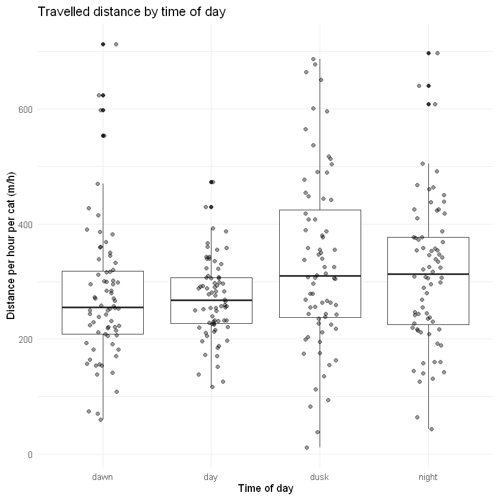
ggplot(rq1_distance_per_cat, aes(x = daytime, y = distance_per_hour_m)) +
geom_boxplot(
width = 0.5,
outlier.shape = NA,
fill = "grey90",
color = "grey30"
) +
geom_jitter(
width = 0.12,
alpha = 0.35,
size = 1.4,
color = "grey20"
) +
labs(
x = "Time of day",
y = "Distance per hour per cat (m/h)",
title = "Travelled distance by time of day",
subtitle = "Each point represents one cat"
) +
theme_minimal() +
theme(
panel.grid.minor = element_blank(),
plot.title = element_text(face = "bold")
)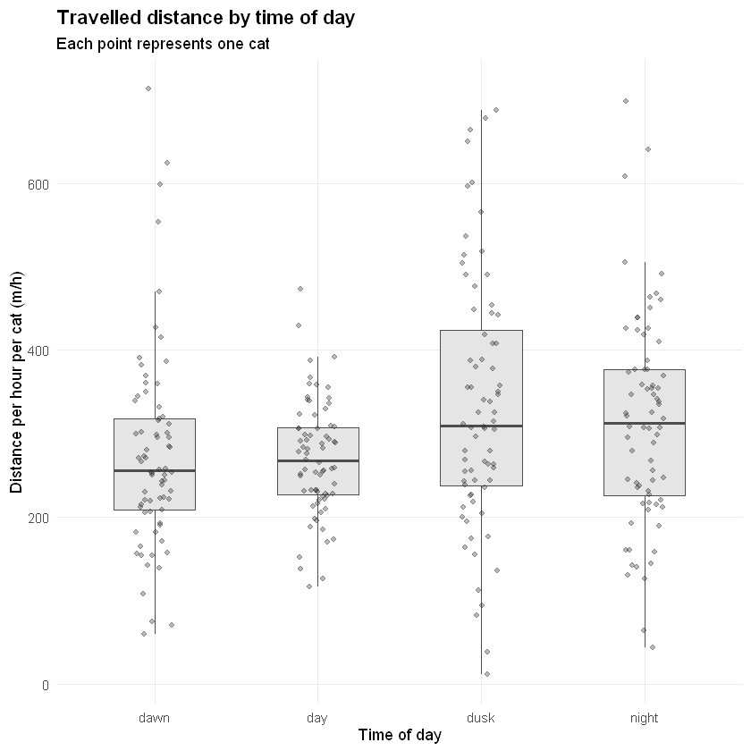
rq1_final_table <- rq1_distance_per_cat %>%
group_by(daytime) %>%
summarise(
median_speed_m_s = median(mean_speed_m_s, na.rm = TRUE),
median_distance_per_hour_m = median(distance_per_hour_m, na.rm = TRUE),
.groups = "drop"
)
rq1_final_table| daytime | median_speed_m_s | median_distance_per_hour_m |
|---|---|---|
| <fct> | <dbl> | <dbl> |
| dawn | 0.07088993 | 255.2037 |
| day | 0.07417118 | 267.0163 |
| dusk | 0.08600307 | 309.6111 |
| night | 0.08692683 | 312.9366 |
RQ2: How large is a cat‘s home range and how does HR-size differ between urban and rural cats?
Here we calculate the HR for all the 92 cats with 95% KDE Home Range
Die Unterscheidung zwischen urban und rural cat erfolgt weiter unten.
head(cats_all_joined)| datetime | cat_id | geometry | day | time | daytime | timelag |
|---|---|---|---|---|---|---|
| <dttm> | <int> | <POINT [m]> | <dbl> | <time> | <chr> | <dbl> |
| 2021-05-03 01:57:57 | 1 | POINT (263866.2 6620083) | 3 | 01:57:57 | night | 145 |
| 2021-05-03 02:00:22 | 1 | POINT (263865.3 6620099) | 3 | 02:00:22 | night | 725 |
| 2021-05-03 02:12:27 | 1 | POINT (263866.9 6620108) | 3 | 02:12:27 | night | 145 |
| 2021-05-03 02:14:52 | 1 | POINT (263873.9 6620101) | 3 | 02:14:52 | night | 403 |
| 2021-05-03 02:21:35 | 1 | POINT (263885.1 6620139) | 3 | 02:21:35 | night | 145 |
| 2021-05-03 02:24:00 | 1 | POINT (263890.1 6620154) | 3 | 02:24:00 | night | 145 |
cat_test <- cats_all_joined %>%
filter(cat_id == "4") ggplot() +
geom_sf(data = cat_test, aes(color = cat_id), show.legend = FALSE) +
coord_sf(crs = st_crs(25833), datum = st_crs(25833)) 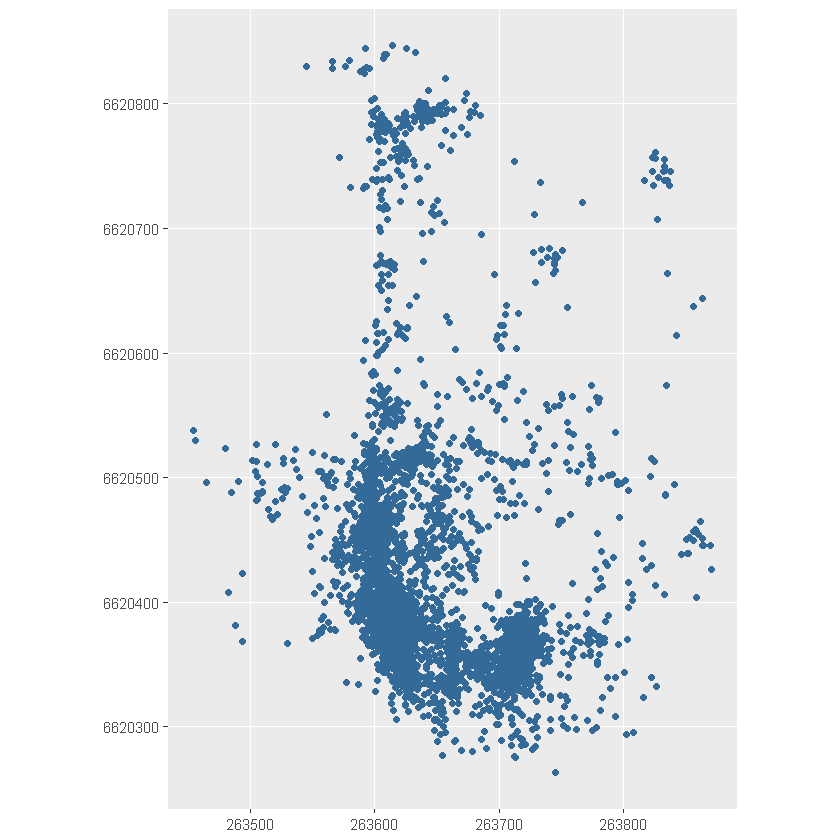
nrow(cat_test)cat_test_sp <- as(cat_test["cat_id"], "Spatial") # Umwandlung in ein Spatial-Objekt
kud <- kernelUD(cat_test_sp, h = "href", grid = 200) # Kernel-Dichte-Schätzung (UD = Utilization Distribution)
homerange <- getverticeshr(kud, percent = 95) # Berechnung der Home Range (95% Isopleth)
# getverticeshr() erzeugt die Polygone der Home Range, hier die 95%-Isopleth.
# 95% bedeutet: Das Polygon umfasst die kleinste Fläche,
# die 95% der geschätzten Nutzung / Utilization Distribution enthält.
hr <- st_as_sf(homerange)
# Wandelt das Home-Range-Polygon zurück in ein sf-Objekt,
# damit man es z. B. mit sf-Funktionen plotten oder speichern kann.ggplot(hr) +
geom_sf(size = 1, alpha = 0.3, color = "red", fill="red") +
geom_sf(data = cat_test, aes(fill = "red")) +
coord_sf(crs = st_crs(25833), datum = st_crs(25833)) +
theme(
axis.ticks = element_blank(),
legend.position="none"
)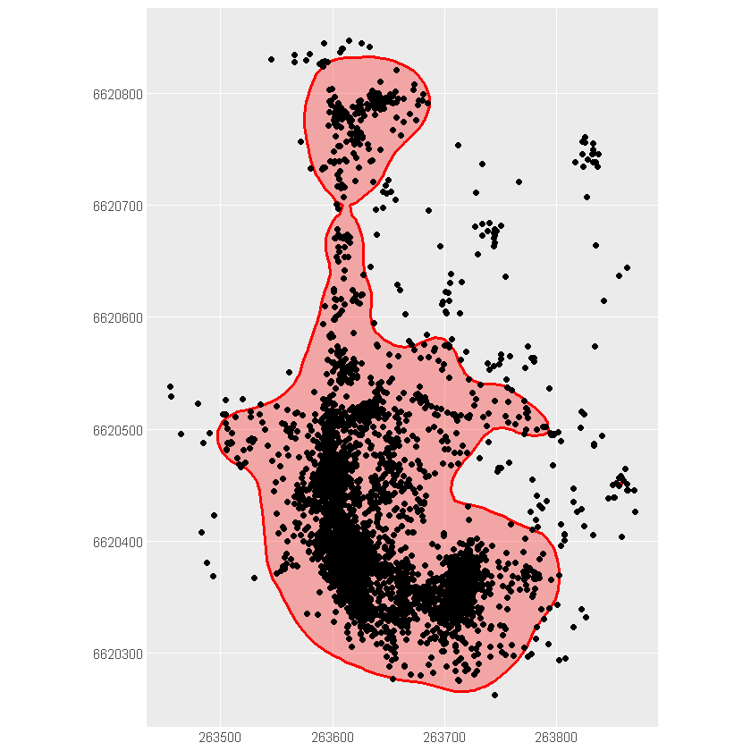
# leere Liste zum Speichern der Resultate (HR) anlegen
hr_list <- list()
# Vektor mit allen cat_id anlegen zum Loopen
cat_ids <- as.character(unique(cats_all_joined$cat_id))
for (id in cat_ids) {
cat_i <- cats_all_joined %>%
filter(as.character(cat_id) == id) %>%
mutate(cat_id = factor(as.character(cat_id))) # wichtig wegen Faktor-Levels
cat_sp <- as(cat_i["cat_id"], "Spatial")
kud <- kernelUD(cat_sp, h = "href", grid = 200)
homerange <- getverticeshr(kud, percent = 95)
hr <- st_as_sf(homerange) %>%
mutate(
cat_id = id,
area_m2 = as.numeric(st_area(geometry)),
area_ha = area_m2 / 10000
)
hr_list[[id]] <- hr
}hr_all <- bind_rows(hr_list)hr_all| id | area | cat_id | area_m2 | area_ha | geometry | |
|---|---|---|---|---|---|---|
| <chr> | <dbl> | <chr> | <dbl> | <dbl> | <GEOMETRY [m]> | |
| 1 | 1 | 1.4673870 | 1 | 14674.950 | 1.4674950 | MULTIPOLYGON (((263831.6 66... |
| 2 | 2 | 1.6013457 | 2 | 16013.456 | 1.6013456 | MULTIPOLYGON (((262841.2 66... |
| 3 | 3 | 0.9736725 | 3 | 9736.725 | 0.9736725 | POLYGON ((262756.5 6619983,... |
| 4 | 4 | 7.8202956 | 4 | 78202.956 | 7.8202956 | MULTIPOLYGON (((263857.7 66... |
| 5 | 5 | 16.8796065 | 5 | 168796.065 | 16.8796065 | MULTIPOLYGON (((263417.6 66... |
| 6 | 6 | 0.4323881 | 6 | 4323.880 | 0.4323880 | MULTIPOLYGON (((263712.8 66... |
| 7 | 7 | 0.4280274 | 7 | 4280.274 | 0.4280274 | POLYGON ((261968.5 6620887,... |
| 8 | 8 | 6.2027408 | 8 | 62027.407 | 6.2027407 | MULTIPOLYGON (((263038.1 66... |
| 9 | 9 | 1.7965472 | 9 | 17965.473 | 1.7965473 | MULTIPOLYGON (((263432.8 66... |
| 10 | 10 | 1.3074123 | 10 | 13074.123 | 1.3074123 | POLYGON ((263134.7 6619860,... |
| 11 | 11 | 0.6595530 | 11 | 6595.529 | 0.6595529 | MULTIPOLYGON (((262638.5 66... |
| 12 | 12 | 1.3560622 | 12 | 13560.622 | 1.3560622 | MULTIPOLYGON (((262989.6 66... |
| 13 | 13 | 0.7350682 | 13 | 7350.682 | 0.7350682 | MULTIPOLYGON (((262398.3 66... |
| 14 | 14 | 0.3152972 | 14 | 3152.971 | 0.3152971 | MULTIPOLYGON (((263724.2 66... |
| 15 | 15 | 0.2280077 | 15 | 2280.077 | 0.2280077 | MULTIPOLYGON (((262869.5 66... |
| 16 | 16 | 3.6663539 | 16 | 36663.538 | 3.6663538 | MULTIPOLYGON (((262805.3 66... |
| 17 | 17 | 1.4263585 | 17 | 14263.585 | 1.4263585 | MULTIPOLYGON (((262831.6 66... |
| 18 | 18 | 0.5820491 | 18 | 5820.491 | 0.5820491 | POLYGON ((263837.8 6620012,... |
| 19 | 19 | 13.4263088 | 19 | 134263.088 | 13.4263088 | POLYGON ((263761 6620004, 2... |
| 20 | 20 | 0.4610545 | 20 | 4610.600 | 0.4610600 | MULTIPOLYGON (((263653.1 66... |
| 21 | 21 | 4.8400479 | 21 | 48400.479 | 4.8400479 | MULTIPOLYGON (((263655.3 66... |
| 22 | 22 | 0.3878512 | 22 | 3878.512 | 0.3878512 | MULTIPOLYGON (((262387.3 66... |
| 23 | 23 | 3.4624297 | 23 | 34624.298 | 3.4624298 | MULTIPOLYGON (((262261.1 66... |
| 24 | 24 | 0.2438920 | 24 | 2438.920 | 0.2438920 | MULTIPOLYGON (((262570.5 66... |
| 25 | 25 | 4.3186461 | 25 | 43186.461 | 4.3186461 | POLYGON ((262544.6 6621077,... |
| 26 | 26 | 377.3831982 | 26 | 3773831.982 | 377.3831982 | MULTIPOLYGON (((263456 6617... |
| 27 | 27 | 3.8195772 | 27 | 38195.772 | 3.8195772 | MULTIPOLYGON (((264108 6620... |
| 28 | 28 | 0.5285811 | 28 | 5285.812 | 0.5285812 | MULTIPOLYGON (((262679.9 66... |
| 29 | 29 | 7.2705682 | 29 | 72705.682 | 7.2705682 | POLYGON ((263567.6 6620332,... |
| 30 | 30 | 0.3424890 | 30 | 3424.891 | 0.3424891 | POLYGON ((263198.5 6619997,... |
| ⋮ | ⋮ | ⋮ | ⋮ | ⋮ | ⋮ | ⋮ |
| 63 | 63 | 157.6703794 | 63 | 1576703.794 | 157.6703794 | MULTIPOLYGON (((262252.1 66... |
| 64 | 64 | 1.0945172 | 64 | 10945.172 | 1.0945172 | POLYGON ((262758.6 6620849,... |
| 65 | 65 | 0.2225044 | 65 | 2225.044 | 0.2225044 | MULTIPOLYGON (((263758.2 66... |
| 66 | 66 | 0.3848096 | 66 | 3848.096 | 0.3848096 | POLYGON ((262807.1 6621334,... |
| 67 | 67 | 1.5132373 | 67 | 15132.373 | 1.5132373 | POLYGON ((263516.7 6619702,... |
| 68 | 68 | 5.7468359 | 68 | 57468.359 | 5.7468359 | MULTIPOLYGON (((262776.6 66... |
| 69 | 69 | 1.1985234 | 69 | 11985.233 | 1.1985233 | MULTIPOLYGON (((262812.2 66... |
| 70 | 70 | 2.0498245 | 70 | 20498.245 | 2.0498245 | MULTIPOLYGON (((262857.8 66... |
| 71 | 71 | 2.5886705 | 71 | 25886.705 | 2.5886705 | MULTIPOLYGON (((261784.5 66... |
| 72 | 72 | 1.1949251 | 72 | 11949.251 | 1.1949251 | MULTIPOLYGON (((262062.5 66... |
| 73 | 73 | 0.2220420 | 73 | 2220.419 | 0.2220419 | MULTIPOLYGON (((262888.6 66... |
| 74 | 74 | 0.2395289 | 74 | 2395.289 | 0.2395289 | MULTIPOLYGON (((262967.6 66... |
| 75 | 75 | 5.5607563 | 75 | 55607.563 | 5.5607563 | MULTIPOLYGON (((262929.1 66... |
| 76 | 76 | 1.9158930 | 76 | 19158.928 | 1.9158928 | MULTIPOLYGON (((262377.5 66... |
| 77 | 77 | 1.0028027 | 77 | 10028.027 | 1.0028027 | MULTIPOLYGON (((262604.7 66... |
| 78 | 78 | 4.2008035 | 78 | 42008.036 | 4.2008036 | MULTIPOLYGON (((263140.2 66... |
| 79 | 79 | 0.3999972 | 79 | 3999.972 | 0.3999972 | POLYGON ((262721.4 6620249,... |
| 80 | 80 | 1.0574505 | 80 | 10574.504 | 1.0574504 | MULTIPOLYGON (((262677.5 66... |
| 81 | 81 | 0.8036952 | 81 | 8036.953 | 0.8036953 | MULTIPOLYGON (((262676.9 66... |
| 82 | 82 | 1.5891789 | 82 | 15891.789 | 1.5891789 | MULTIPOLYGON (((262516 6621... |
| 83 | 83 | 0.8944665 | 83 | 8944.666 | 0.8944666 | POLYGON ((263044 6619887, 2... |
| 84 | 84 | 4.2184466 | 84 | 42184.466 | 4.2184466 | MULTIPOLYGON (((262937 6619... |
| 85 | 85 | 0.4585665 | 85 | 4585.665 | 0.4585665 | POLYGON ((261905.7 6620904,... |
| 86 | 86 | 3.9186237 | 86 | 39186.238 | 3.9186238 | MULTIPOLYGON (((262797.1 66... |
| 87 | 87 | 3.4404791 | 87 | 34404.790 | 3.4404790 | MULTIPOLYGON (((261869.7 66... |
| 88 | 88 | 1.3907625 | 88 | 13907.625 | 1.3907625 | MULTIPOLYGON (((261918.9 66... |
| 89 | 89 | 0.6532357 | 89 | 6532.356 | 0.6532356 | POLYGON ((262335 6620698, 2... |
| 90 | 90 | 0.4858018 | 90 | 4858.018 | 0.4858018 | POLYGON ((262821.5 6620944,... |
| 91 | 91 | 0.2783291 | 91 | 2783.291 | 0.2783291 | MULTIPOLYGON (((263364.8 66... |
| 92 | 92 | 0.3912436 | 92 | 3905.500 | 0.3905500 | MULTIPOLYGON (((262769.3 66... |
ggplot() +
geom_sf(data = hr_all, aes(fill = cat_id), alpha = 0.3, show.legend = FALSE) +
# geom_sf(data = cats_all_joined, aes(color = cat_id), size = 0.2, show.legend = FALSE) +
coord_sf(crs = st_crs(25833), datum = st_crs(25833)) +
theme_minimal()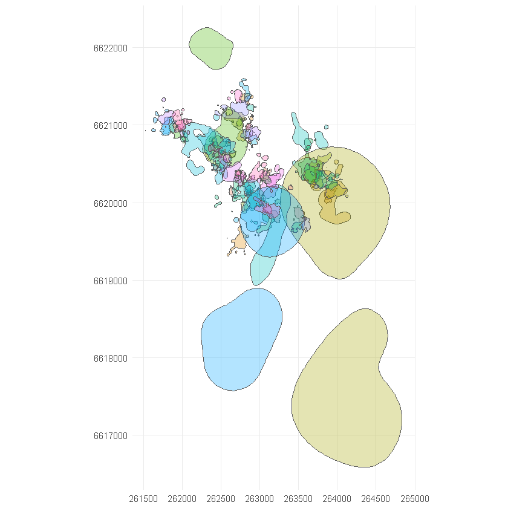
tmap_mode("view")
m <- tm_shape(hr_all) +
tm_polygons(
fill = "cat_id",
fill_alpha = 0.3,
col = "black",
lwd = 0.5
)
print(tmap_leaflet(m))
tmap_save(m, "Katzen_HR_Karte.html")# Flächentabelle
hr_area_summary <- hr_all %>%
st_drop_geometry() %>%
select(cat_id, area_m2, area_ha) %>%
arrange(desc(area_ha))
head(hr_area_summary)| cat_id | area_m2 | area_ha | |
|---|---|---|---|
| <chr> | <dbl> | <dbl> | |
| 26 | 26 | 3773832.0 | 377.38320 |
| 63 | 63 | 1576703.8 | 157.67038 |
| 34 | 34 | 505593.2 | 50.55932 |
| 50 | 50 | 327048.4 | 32.70484 |
| 54 | 54 | 217902.9 | 21.79029 |
| 5 | 5 | 168796.1 | 16.87961 |
ggplot(hr_area_summary, aes(x = fct_reorder(cat_id, area_ha), y = area_ha)) +
geom_col() +
coord_flip() +
labs(
x = "Cat ID",
y = "Home range area [ha]",
title = "95% KDE home range size by cat",
subtitle = "Home range area calculated from 95% kernel density estimates"
) +
theme_minimal()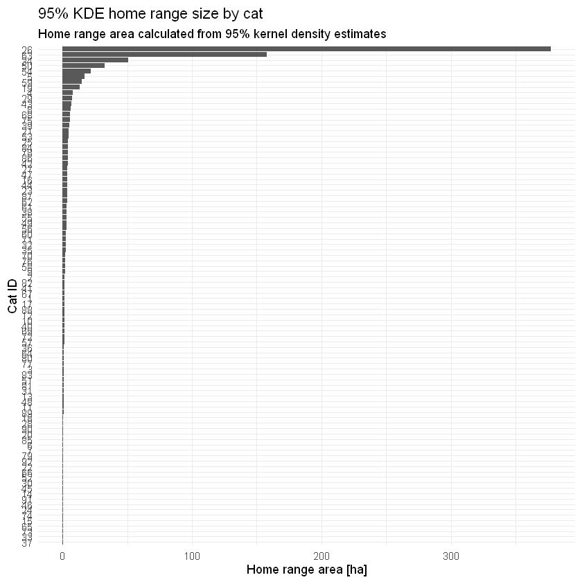
hr_area_top20 <- hr_area_summary %>%
slice_max(area_ha, n = 20)
ggplot(hr_area_top20, aes(x = fct_reorder(cat_id, area_ha), y = area_ha)) +
geom_col() +
coord_flip() +
labs(
x = "Cat ID",
y = "Home range area [ha]",
title = "20 largest 95% KDE home ranges",
subtitle = "Home range area calculated from 95% kernel density estimates"
) +
theme_minimal()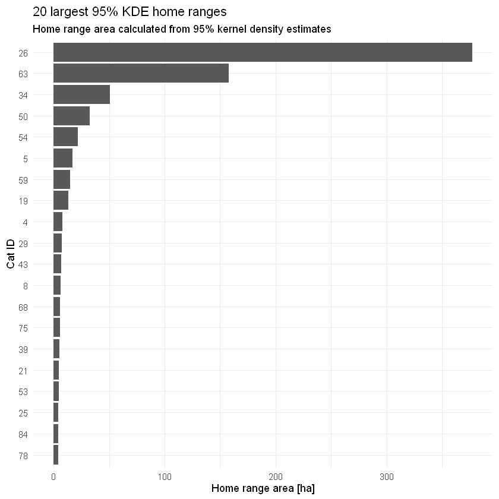
ggplot(hr_area_summary, aes(x = area_ha)) +
geom_histogram(bins = 30) +
labs(
x = "95% KDE home range area [ha]",
y = "Number of cats",
title = "Distribution of home range sizes",
subtitle = "Home range areas based on 95% kernel home-range isopleths"
) +
theme_minimal()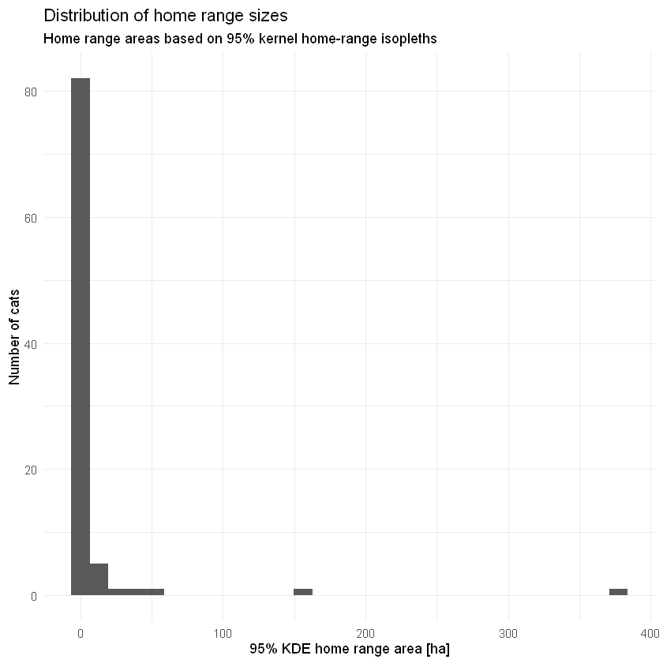
ggplot(hr_area_summary, aes(x = "", y = area_ha)) +
geom_boxplot(width = 0.3, outlier.shape = NA) +
geom_jitter(width = 0.08, alpha = 0.5) +
scale_y_log10(
limits = c(0.1, NA),
breaks = c(0.1, 1, 10, 100),
labels = c("0.1", "1", "10", "100")
) +
labs(
x = "",
y = "95% KDE home range area [ha, log scale]",
title = "Variation in home range size between cats",
subtitle = "Each point represents one cat"
) +
theme_minimal()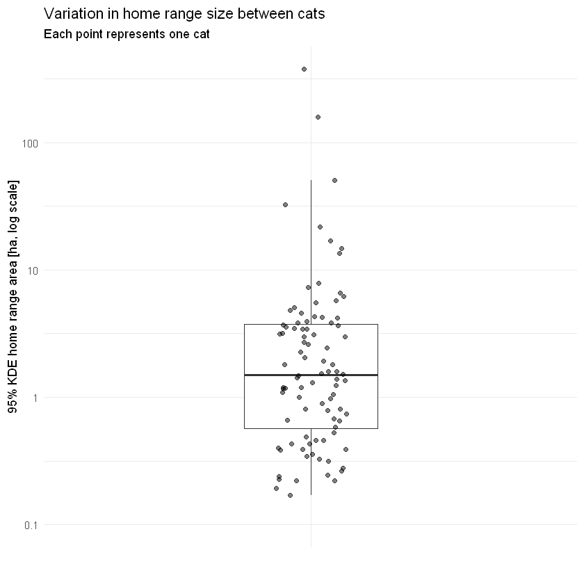
ggplot(hr_area_summary, aes(x = "", y = area_ha)) +
geom_boxplot(
width = 0.3,
outlier.shape = NA,
fill = "grey90",
color = "grey30"
) +
geom_jitter(
width = 0.08,
alpha = 0.35,
size = 1.4,
color = "grey20"
) +
scale_y_log10(
limits = c(0.1, NA),
breaks = c(0.1, 1, 10, 100),
labels = c("0.1", "1", "10", "100")
) +
labs(
x = NULL,
y = "95% KDE home range area [ha, log scale]",
title = "Variation in home range size between cats",
subtitle = "Each point represents one cat"
) +
theme_minimal() +
theme(
panel.grid.minor = element_blank(),
plot.title = element_text(face = "bold")
)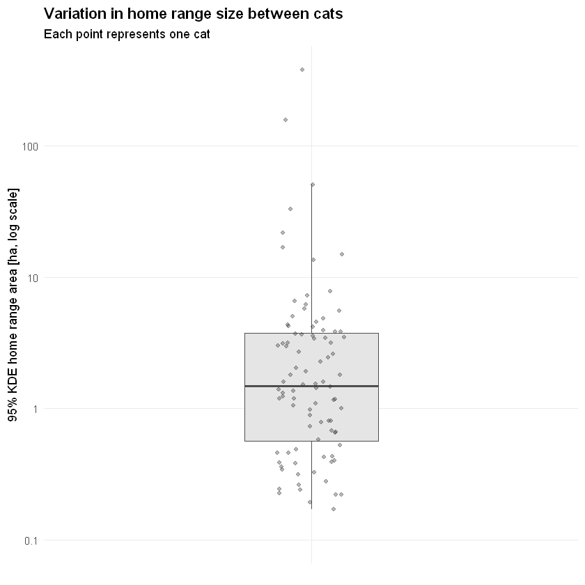
summary(hr_all$area_ha) Min. 1st Qu. Median Mean 3rd Qu. Max.
0.1704 0.5687 1.4904 9.2936 3.7448 377.3832 # HR-Grössen in Klassen einteilen
hr_area_summary_classified <- hr_area_summary %>%
mutate(
area_class = cut(
area_ha,
breaks = c(0, 1, 2, 4, 10, Inf),
labels = c("0–1", "1–2", "2–4", "4–10", ">10"),
include.lowest = TRUE,
right = FALSE
)
)hr_area_summary_classified %>%
count(area_class)| area_class | n |
|---|---|
| <fct> | <int> |
| 0–1 | 33 |
| 1–2 | 20 |
| 2–4 | 19 |
| 4–10 | 12 |
| >10 | 8 |
# Plotten
ggplot(hr_area_summary_classified, aes(x = area_class)) +
geom_bar() +
labs(
x = "95% KDE home range area [ha]",
y = "Number of cats",
title = "Distribution of home range sizes",
subtitle = "Home range areas grouped into size classes"
) +
theme_minimal()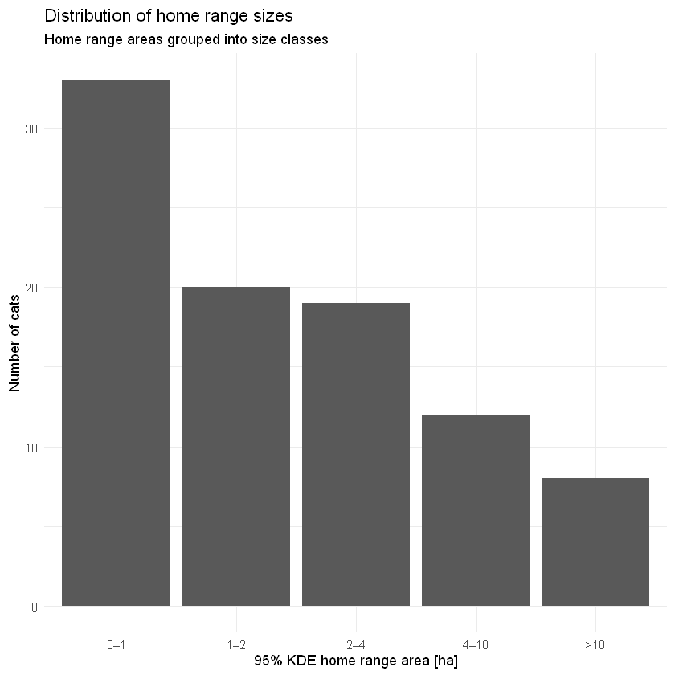
ggplot(hr_area_summary_classified, aes(x = area_class)) +
geom_bar(
fill = "grey90",
color = "grey30",
linewidth = 0.3
) +
geom_text(
stat = "count",
aes(label = after_stat(count)),
vjust = -0.3,
size = 3
) +
scale_y_continuous(
expand = expansion(mult = c(0, 0.1))
) +
labs(
x = "95% KDE home range area [ha]",
y = "Number of cats",
title = "Distribution of home range sizes",
subtitle = "Home range areas grouped into size classes"
) +
theme_minimal() +
theme(
panel.grid.minor = element_blank(),
plot.title = element_text(face = "bold")
)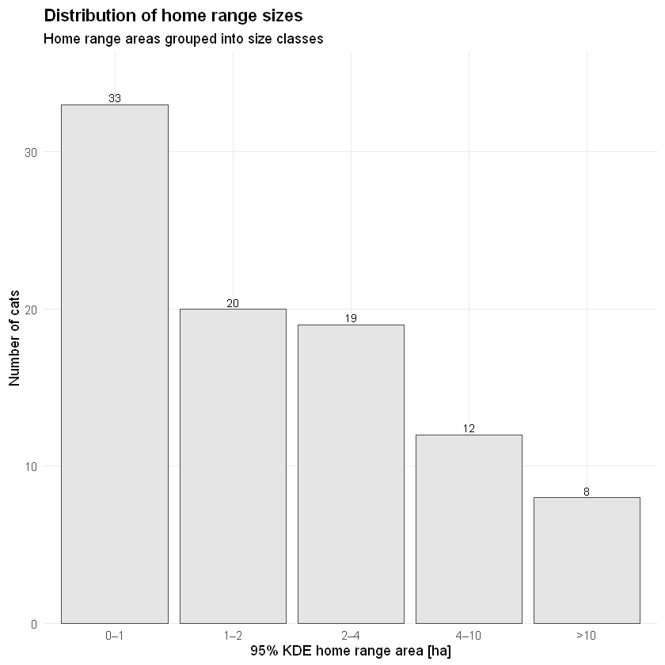
# leere Liste zum Speichern der Resultate (HR) anlegen
hr_list_80 <- list()
# Vektor mit allen cat_id anlegen zum Loopen
cat_ids <- as.character(unique(cats_all_joined$cat_id))
for (id in cat_ids) {
cat_i <- cats_all_joined %>%
filter(as.character(cat_id) == id) %>%
mutate(cat_id = factor(as.character(cat_id))) # wichtig wegen Faktor-Levels
cat_sp <- as(cat_i["cat_id"], "Spatial")
kud <- kernelUD(cat_sp, h = "href", grid = 200)
homerange <- getverticeshr(kud, percent = 80)
hr <- st_as_sf(homerange) %>%
mutate(
cat_id = id,
area_m2 = as.numeric(st_area(geometry)),
area_ha = area_m2 / 10000
)
hr_list_80[[id]] <- hr
}hr_all_80 <- bind_rows(hr_list_80)ggplot() +
geom_sf(data = hr_all_80, aes(fill = cat_id), alpha = 0.3, show.legend = FALSE) +
# geom_sf(data = cats_all_joined, aes(color = cat_id), size = 0.2, show.legend = FALSE) +
coord_sf(crs = st_crs(25833), datum = st_crs(25833)) +
theme_minimal()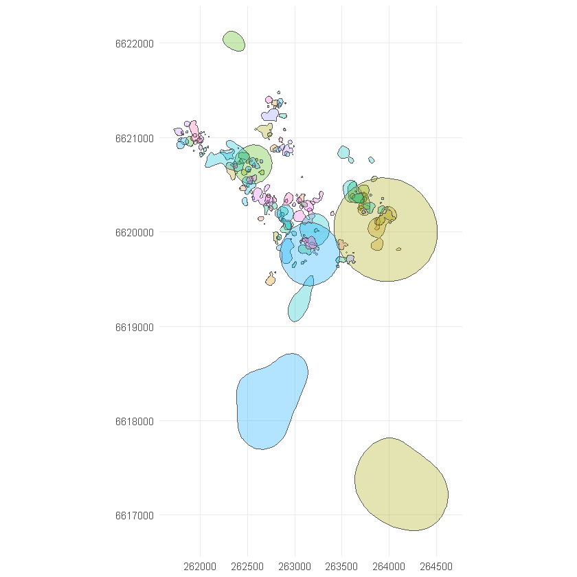
p95 <- ggplot() +
geom_sf(data = hr_all, aes(fill = cat_id), alpha = 0.3, show.legend = FALSE) +
# geom_sf(data = cats_all_joined, aes(color = cat_id), size = 0.2, show.legend = FALSE) +
coord_sf(crs = st_crs(25833), datum = st_crs(25833)) +
labs(
title = "95% KDE home range",
subtitle = "Home range"
) +
theme_minimal()
p80 <- ggplot() +
geom_sf(data = hr_all_80, aes(fill = cat_id), alpha = 0.3, show.legend = FALSE) +
# geom_sf(data = cats_all_joined, aes(color = cat_id), size = 0.2, show.legend = FALSE) +
coord_sf(crs = st_crs(25833), datum = st_crs(25833)) +
labs(
title = "80% KDE home range",
subtitle = "Core area"
) +
theme_minimal()
p95 + p80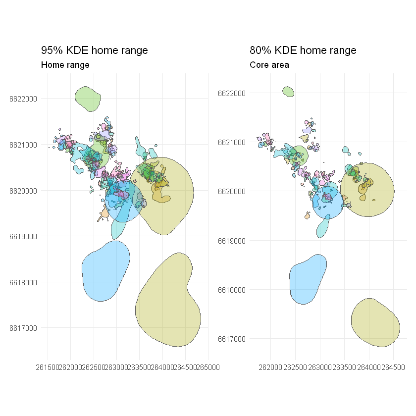
Um die Katzen nach “städtisch” und “ländlich” zu unterscheiden werden zusätzliche Daten mit land use hinzugezogen. Die Daten stammen von OpenStreetMap, die Dokumentation der Layer befindet sich hier
Als städtisch wird zusammengefasst:
Als ländlich wird zusammengefasst:
layers <- st_layers("ostlandet.gpkg")
print(layers)Driver: GPKG
Available layers:
layer_name geometry_type features fields crs_name
1 gis_osm_traffic_free Point 61179 5 WGS 84 (CRS84)
2 gis_osm_pois_free Point 66594 4 WGS 84 (CRS84)
3 gis_osm_places_free Point 86754 5 WGS 84 (CRS84)
4 gis_osm_transport_free Point 35628 4 WGS 84 (CRS84)
5 gis_osm_natural_free Point 80314 4 WGS 84 (CRS84)
6 gis_osm_pofw_free Point 128 4 WGS 84 (CRS84)
7 gis_osm_roads_free Line String 928093 10 WGS 84 (CRS84)
8 gis_osm_waterways_free Line String 182907 5 WGS 84 (CRS84)
9 gis_osm_pois_a_free Multi Polygon 23542 4 WGS 84 (CRS84)
10 gis_osm_landuse_a_free Multi Polygon 230652 4 WGS 84 (CRS84)
11 gis_osm_places_a_free Multi Polygon 3541 5 WGS 84 (CRS84)
12 gis_osm_water_a_free Multi Polygon 424383 4 WGS 84 (CRS84)
13 gis_osm_protected_areas_a_free Multi Polygon 2646 3 WGS 84 (CRS84)
14 gis_osm_railways_free Line String 8736 7 WGS 84 (CRS84)
15 gis_osm_traffic_a_free Multi Polygon 24633 5 WGS 84 (CRS84)
16 gis_osm_buildings_a_free Multi Polygon 1957766 5 WGS 84 (CRS84)
17 gis_osm_pofw_a_free Multi Polygon 970 4 WGS 84 (CRS84)
18 gis_osm_transport_a_free Multi Polygon 243 4 WGS 84 (CRS84)
19 gis_osm_natural_a_free Multi Polygon 2347 4 WGS 84 (CRS84)
20 gis_osm_adminareas_a_free Multi Polygon 156 4 WGS 84 (CRS84)osm_landuse <- st_read(
"ostlandet.gpkg",
layer = "gis_osm_landuse_a_free",
quiet = TRUE
)st_crs(osm_landuse)
#st_geometry_type(osm_landuse)
names(osm_landuse)
head(osm_landuse)Coordinate Reference System:
User input: WGS 84 (CRS84)
wkt:
GEOGCRS["WGS 84 (CRS84)",
DATUM["World Geodetic System 1984",
ELLIPSOID["WGS 84",6378137,298.257223563,
LENGTHUNIT["metre",1]]],
PRIMEM["Greenwich",0,
ANGLEUNIT["degree",0.0174532925199433]],
CS[ellipsoidal,2],
AXIS["geodetic longitude (Lon)",east,
ORDER[1],
ANGLEUNIT["degree",0.0174532925199433]],
AXIS["geodetic latitude (Lat)",north,
ORDER[2],
ANGLEUNIT["degree",0.0174532925199433]],
ID["OGC","CRS84"]]| osm_id | code | fclass | name | geom | |
|---|---|---|---|---|---|
| <chr> | <int> | <chr> | <chr> | <MULTIPOLYGON [°]> | |
| 1 | 3235895 | 7202 | park | Sofienbergparken | MULTIPOLYGON (((10.76135 59... |
| 2 | 3236548 | 7202 | park | Olaf Ryes plass | MULTIPOLYGON (((10.75745 59... |
| 3 | 3236549 | 7202 | park | Birkelunden | MULTIPOLYGON (((10.75925 59... |
| 4 | 3426697 | 7202 | park | St. Hanshaugen | MULTIPOLYGON (((10.73857 59... |
| 5 | 3610607 | 7202 | park | MULTIPOLYGON (((10.74993 59... | |
| 6 | 3612169 | 7202 | park | Gråbeinsletta | MULTIPOLYGON (((10.75021 59... |
# crs transformieren
osm_landuse <- osm_landuse %>%
st_transform(st_crs(hr_all))# clippen auf Katzengebiet
cats_bbox <- st_as_sfc(st_bbox(hr_all))
osm_landuse_clip <- st_crop(osm_landuse, cats_bbox)head(osm_landuse_clip)| osm_id | code | fclass | name | geom | |
|---|---|---|---|---|---|
| <chr> | <int> | <chr> | <chr> | <POLYGON [m]> | |
| 361 | 23717614 | 7203 | residential | POLYGON ((262177.5 6622038,... | |
| 362 | 23717645 | 7203 | residential | POLYGON ((261670.7 6621330,... | |
| 363 | 23717693 | 7203 | residential | POLYGON ((264142.1 6622054,... | |
| 364 | 23717708 | 7203 | residential | POLYGON ((263485.7 6619682,... | |
| 365 | 23717807 | 7212 | retail | POLYGON ((262918.5 6621674,... | |
| 6991 | 71197302 | 7202 | park | Universitetstunet | POLYGON ((261697.1 6621877,... |
unique(osm_landuse_clip$fclass)ggplot() +
geom_sf(data = osm_landuse_clip, aes(fill = fclass), color = NA, alpha = 0.6) +
geom_sf(data = hr_all, fill = NA, color = "black", linewidth = 0.4) +
coord_sf(crs = st_crs(hr_all), datum = st_crs(hr_all)) +
labs(
fill = "OSM landuse",
title = "OSM landuse and cat home ranges"
) +
theme_minimal()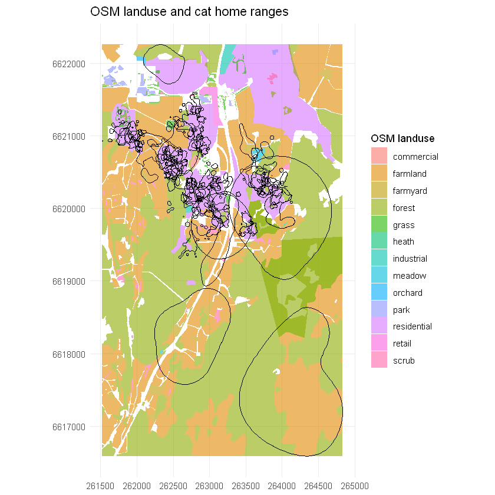
# Land use klassifizieren / zusammenfassen in urban und rural
osm_landuse_clip_classified <- osm_landuse_clip %>%
mutate(
landuse_classified = case_when(
fclass %in% c(
"residential",
"retail",
"industrial",
"commercial"
) ~ "urban",
fclass %in% c(
"park",
"forest",
"farmland",
"farmyard",
"scrub",
"grass",
"heath",
"meadow",
"orchard"
) ~ "rural"
)
) head(osm_landuse_clip_classified)| osm_id | code | fclass | name | geom | landuse_classified | |
|---|---|---|---|---|---|---|
| <chr> | <int> | <chr> | <chr> | <POLYGON [m]> | <chr> | |
| 361 | 23717614 | 7203 | residential | POLYGON ((262177.5 6622038,... | urban | |
| 362 | 23717645 | 7203 | residential | POLYGON ((261670.7 6621330,... | urban | |
| 363 | 23717693 | 7203 | residential | POLYGON ((264142.1 6622054,... | urban | |
| 364 | 23717708 | 7203 | residential | POLYGON ((263485.7 6619682,... | urban | |
| 365 | 23717807 | 7212 | retail | POLYGON ((262918.5 6621674,... | urban | |
| 6991 | 71197302 | 7202 | park | Universitetstunet | POLYGON ((261697.1 6621877,... | rural |
# Kontrolle
unique(osm_landuse_clip_classified$landuse_classified)head(hr_all)| id | area | cat_id | area_m2 | area_ha | geometry | |
|---|---|---|---|---|---|---|
| <chr> | <dbl> | <chr> | <dbl> | <dbl> | <GEOMETRY [m]> | |
| 1 | 1 | 1.4673870 | 1 | 14674.950 | 1.4674950 | MULTIPOLYGON (((263831.6 66... |
| 2 | 2 | 1.6013457 | 2 | 16013.456 | 1.6013456 | MULTIPOLYGON (((262841.2 66... |
| 3 | 3 | 0.9736725 | 3 | 9736.725 | 0.9736725 | POLYGON ((262756.5 6619983,... |
| 4 | 4 | 7.8202956 | 4 | 78202.956 | 7.8202956 | MULTIPOLYGON (((263857.7 66... |
| 5 | 5 | 16.8796065 | 5 | 168796.065 | 16.8796065 | MULTIPOLYGON (((263417.6 66... |
| 6 | 6 | 0.4323881 | 6 | 4323.880 | 0.4323880 | MULTIPOLYGON (((263712.8 66... |
head(osm_landuse_clip_classified)| osm_id | code | fclass | name | geom | landuse_classified | |
|---|---|---|---|---|---|---|
| <chr> | <int> | <chr> | <chr> | <POLYGON [m]> | <chr> | |
| 361 | 23717614 | 7203 | residential | POLYGON ((262177.5 6622038,... | urban | |
| 362 | 23717645 | 7203 | residential | POLYGON ((261670.7 6621330,... | urban | |
| 363 | 23717693 | 7203 | residential | POLYGON ((264142.1 6622054,... | urban | |
| 364 | 23717708 | 7203 | residential | POLYGON ((263485.7 6619682,... | urban | |
| 365 | 23717807 | 7212 | retail | POLYGON ((262918.5 6621674,... | urban | |
| 6991 | 71197302 | 7202 | park | Universitetstunet | POLYGON ((261697.1 6621877,... | rural |
# sicherstellen, dass CRS gleich ist
st_crs(hr_all) == st_crs(osm_landuse_clip_classified)# HR mit Landuse überschneiden
hr_landuse_intersection <- st_intersection(
hr_all,
osm_landuse_clip_classified
)#head(hr_landuse_intersection)# Schnittflächen berechnen
hr_landuse_area <- hr_landuse_intersection %>%
mutate(intersection_area_m2 = as.numeric(st_area(.))) %>%
st_drop_geometry() %>%
group_by(cat_id, landuse_classified) %>%
summarise(
area_m2 = sum(intersection_area_m2, na.rm = TRUE),
.groups = "drop"
)head(hr_landuse_area)| cat_id | landuse_classified | area_m2 |
|---|---|---|
| <chr> | <chr> | <dbl> |
| 1 | rural | 322.4457 |
| 1 | urban | 14457.8000 |
| 10 | rural | 4962.6112 |
| 10 | urban | 7158.0928 |
| 11 | rural | 5449.1732 |
| 11 | urban | 492.7826 |
# ins wide-format bringen
hr_landuse_wide <- hr_landuse_area %>%
pivot_wider(
names_from = landuse_classified,
values_from = area_m2,
values_fill = 0
)# klassifizieren
hr_landuse_class <- hr_landuse_wide %>%
mutate(
classified_area_m2 = urban + rural,
urban_share = urban / classified_area_m2,
rural_share = rural / classified_area_m2,
cat_environment = case_when(
urban_share > rural_share ~ "urban",
rural_share > urban_share ~ "rural"
)
)head(hr_landuse_class)| cat_id | rural | urban | classified_area_m2 | urban_share | rural_share | cat_environment |
|---|---|---|---|---|---|---|
| <chr> | <dbl> | <dbl> | <dbl> | <dbl> | <dbl> | <chr> |
| 1 | 322.4457 | 14457.8000 | 14780.246 | 0.97818401 | 0.02181599 | urban |
| 10 | 4962.6112 | 7158.0928 | 12120.704 | 0.59056742 | 0.40943258 | urban |
| 11 | 5449.1732 | 492.7826 | 5941.956 | 0.08293273 | 0.91706727 | rural |
| 12 | 0.0000 | 13560.6216 | 13560.622 | 1.00000000 | 0.00000000 | urban |
| 13 | 2175.7864 | 4886.9558 | 7062.742 | 0.69193461 | 0.30806539 | urban |
| 14 | 0.0000 | 3152.9713 | 3152.971 | 1.00000000 | 0.00000000 | urban |
# Mit Home-Range-Fläche verbinden
hr_area_environment <- hr_area_summary %>%
left_join(
hr_landuse_class %>%
select(cat_id, urban, rural, classified_area_m2, urban_share, rural_share, cat_environment),
by = "cat_id"
)hr_area_environment %>%
count(cat_environment)| cat_environment | n |
|---|---|
| <chr> | <int> |
| rural | 12 |
| urban | 80 |
ggplot(hr_area_environment_filtered, aes(x = cat_environment, y = area_ha)) +
geom_boxplot(outlier.shape = NA) +
geom_jitter(width = 0.12, alpha = 0.6) +
scale_y_log10(
labels = label_number()
) +
labs(
x = "Dominant environment of home range",
y = "95% KDE home range area [ha, log scale]",
title = "Home range size of urban and rural cats",
subtitle = "Cats classified by dominant OSM land-use area within their home range"
) +
theme_minimal()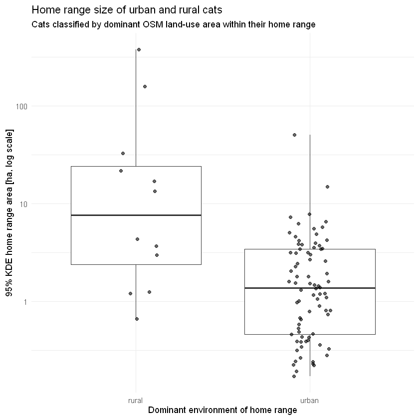
ggplot(hr_area_environment_filtered, aes(x = cat_environment, y = area_ha)) +
geom_boxplot(
width = 0.5,
outlier.shape = NA,
fill = "grey90",
color = "grey30"
) +
geom_jitter(
width = 0.12,
alpha = 0.35,
size = 1.4,
color = "grey20"
) +
scale_y_log10(
limits = c(0.1, NA),
breaks = c(0.1, 1, 10, 100),
labels = c("0.1", "1", "10", "100")
) +
labs(
x = "Dominant environment of home range",
y = "95% KDE home range area [ha, log scale]",
title = "Home range size of urban and rural cats",
subtitle = "Cats classified by dominant OSM land-use area within their home range"
) +
theme_minimal() +
theme(
panel.grid.minor = element_blank(),
plot.title = element_text(face = "bold")
)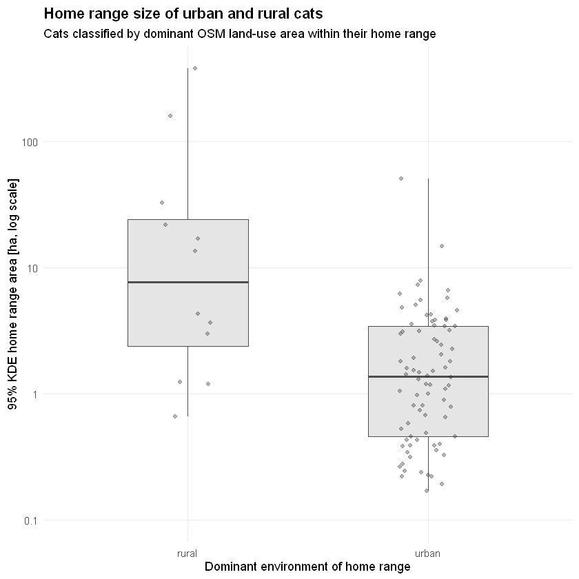
head(hr_area_environment_filtered)| cat_id | area_m2 | area_ha | urban | rural | classified_area_m2 | urban_share | rural_share | cat_environment | hr_area_m2 | classified_share | |
|---|---|---|---|---|---|---|---|---|---|---|---|
| <chr> | <dbl> | <dbl> | <dbl> | <dbl> | <dbl> | <dbl> | <dbl> | <chr> | <dbl> | <dbl> | |
| 1 | 26 | 3773832.0 | 377.38320 | 322198.94 | 3723174.7 | 4045373.6 | 0.07964628 | 0.9203537 | rural | 3773832.0 | 1.0719538 |
| 2 | 63 | 1576703.8 | 157.67038 | 172886.23 | 1198252.5 | 1371138.7 | 0.12608953 | 0.8739105 | rural | 1576703.8 | 0.8696235 |
| 3 | 34 | 505593.2 | 50.55932 | 309781.70 | 172066.0 | 481847.7 | 0.64290373 | 0.3570963 | urban | 505593.2 | 0.9530344 |
| 4 | 50 | 327048.4 | 32.70484 | 77874.55 | 161890.0 | 239764.6 | 0.32479586 | 0.6752041 | rural | 327048.4 | 0.7331165 |
| 5 | 54 | 217902.9 | 21.79029 | 81723.80 | 127336.6 | 209060.4 | 0.39090991 | 0.6090901 | rural | 217902.9 | 0.9594200 |
| 6 | 5 | 168796.1 | 16.87961 | 48438.47 | 106789.3 | 155227.8 | 0.31204772 | 0.6879523 | rural | 168796.1 | 0.9196172 |
length(unique((hr_area_environment_filtered$cat_id)))# Homeranges einfärben nach urban / rural
hr_all_environment <- hr_all %>%
left_join(
hr_area_environment_filtered %>%
st_drop_geometry() %>% # falls es ein sf-Objekt ist
select(cat_id, cat_environment, urban_share, rural_share, classified_share),
by = "cat_id"
)ggplot(hr_all_environment) +
geom_sf(
aes(fill = cat_environment),
alpha = 0.45,
color = "grey30",
linewidth = 0.3
) +
coord_sf(crs = st_crs(hr_all), datum = st_crs(hr_all)) +
scale_fill_manual(
values = c(
"urban" = "grey70",
"rural" = "darkseagreen3"
),
labels = c(
"urban" = "Urban",
"rural" = "Rural"
),
na.value = "white"
) +
labs(
fill = "Dominant environment",
title = "95% KDE home ranges classified as urban or rural",
subtitle = "Classification based on dominant OSM land-use area within each home range"
) +
theme_minimal() +
theme(
panel.grid.minor = element_blank(),
plot.title = element_text(face = "bold")
)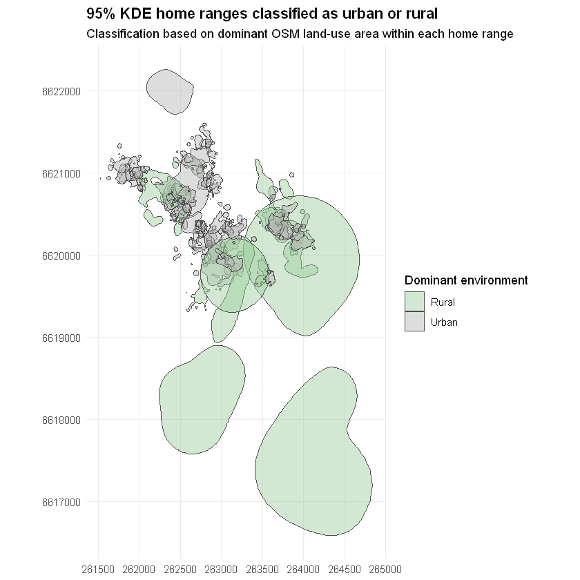
RQ3: How often do cats meet and how is this related to overlapping Home Ranges?
Wir definieren “meet” wie folgt: Two cats are considered to meet if their GPS locations are within 10 meters of each other and the timestamps differ by no more than 1 minute.
WEIL: The 10 m distance threshold was chosen to account for GPS positioning uncertainty and small temporal offsets between fixes.
Aufgrund der grossen Datenmenge muss das Dataframe vorbereitet werden. Indem über das Datum gefiltert und dann gelooped wird, kann die Datenmenge für den Paarvergleich massiv reduziert werden.
head(cats_all_joined)| datetime | cat_id | geometry | day | time | daytime | timelag |
|---|---|---|---|---|---|---|
| <dttm> | <int> | <POINT [m]> | <dbl> | <time> | <chr> | <dbl> |
| 2021-05-03 01:57:57 | 1 | POINT (263866.2 6620083) | 3 | 01:57:57 | night | 145 |
| 2021-05-03 02:00:22 | 1 | POINT (263865.3 6620099) | 3 | 02:00:22 | night | 725 |
| 2021-05-03 02:12:27 | 1 | POINT (263866.9 6620108) | 3 | 02:12:27 | night | 145 |
| 2021-05-03 02:14:52 | 1 | POINT (263873.9 6620101) | 3 | 02:14:52 | night | 403 |
| 2021-05-03 02:21:35 | 1 | POINT (263885.1 6620139) | 3 | 02:21:35 | night | 145 |
| 2021-05-03 02:24:00 | 1 | POINT (263890.1 6620154) | 3 | 02:24:00 | night | 145 |
# Thresholds für Distanz- und Zeitdifferenz definieren
spatial_threshold <- 10 # Meter
time_threshold <- 60 # Sekunden = 1 Minutecats_meet_input <- cats_all_joined %>%
mutate(
row_id = row_number(),
cat_id = as.character(cat_id),
date = as.Date(datetime),
# mit datetime_bin werden die Sekunden auf die Minute abgerundet
datetime_bin = floor_date(datetime, unit = "minute"),
# Koordinaten extrahieren und in separater Spalte speichern
X = st_coordinates(.)[, 1],
Y = st_coordinates(.)[, 2]
) %>%
# Geometrie droppen, da nicht mehr benötigt (in X, Y)
st_drop_geometry() %>%
select(row_id, cat_id, date, datetime, datetime_bin, X, Y)head(cats_meet_input)| row_id | cat_id | date | datetime | datetime_bin | X | Y |
|---|---|---|---|---|---|---|
| <int> | <chr> | <date> | <dttm> | <dttm> | <dbl> | <dbl> |
| 1 | 1 | 2021-05-03 | 2021-05-03 01:57:57 | 2021-05-03 01:57:00 | 263866.2 | 6620083 |
| 2 | 1 | 2021-05-03 | 2021-05-03 02:00:22 | 2021-05-03 02:00:00 | 263865.3 | 6620099 |
| 3 | 1 | 2021-05-03 | 2021-05-03 02:12:27 | 2021-05-03 02:12:00 | 263866.9 | 6620108 |
| 4 | 1 | 2021-05-03 | 2021-05-03 02:14:52 | 2021-05-03 02:14:00 | 263873.9 | 6620101 |
| 5 | 1 | 2021-05-03 | 2021-05-03 02:21:35 | 2021-05-03 02:21:00 | 263885.1 | 6620139 |
| 6 | 1 | 2021-05-03 | 2021-05-03 02:24:00 | 2021-05-03 02:24:00 | 263890.1 | 6620154 |
Mit nur einem Datum zum Testen der Funktionen, am Schluss wenn alles klappt über ganzes Dataframe loopen.
test_df <- cats_meet_input %>%
filter(date == "2021-05-03" | date == "2021-05-04")
test_day <- test_df %>%
filter(date == "2021-05-03")
unique(test_df$date)
unique(test_day$date)
head(test_day)| row_id | cat_id | date | datetime | datetime_bin | X | Y |
|---|---|---|---|---|---|---|
| <int> | <chr> | <date> | <dttm> | <dttm> | <dbl> | <dbl> |
| 1 | 1 | 2021-05-03 | 2021-05-03 01:57:57 | 2021-05-03 01:57:00 | 263866.2 | 6620083 |
| 2 | 1 | 2021-05-03 | 2021-05-03 02:00:22 | 2021-05-03 02:00:00 | 263865.3 | 6620099 |
| 3 | 1 | 2021-05-03 | 2021-05-03 02:12:27 | 2021-05-03 02:12:00 | 263866.9 | 6620108 |
| 4 | 1 | 2021-05-03 | 2021-05-03 02:14:52 | 2021-05-03 02:14:00 | 263873.9 | 6620101 |
| 5 | 1 | 2021-05-03 | 2021-05-03 02:21:35 | 2021-05-03 02:21:00 | 263885.1 | 6620139 |
| 6 | 1 | 2021-05-03 | 2021-05-03 02:24:00 | 2021-05-03 02:24:00 | 263890.1 | 6620154 |
Problem: ich will nicht alle Punkte mit allen vergleichen, sondern nur diejenigen, die zeitlich nahe bei einander liegen. –> ich brauche eine zweite Tabelle, die ich mit test_day über einen inner_join zusammenfügen kann.
Beispiel: - Originalminute = 12:05 - Vergleichsminuten: 12:04, 12:05, 12:06
Hierfür wird jede Zeile 3 Mal kopiert mit einem offset von -1, 0 und +1 Minute. Dazu wird crossing vom Paket tidyr verwendet.
test_day_right <- test_day %>%
# neue Spalte mit offset [-1:1] erstellen
tidyr::crossing(offset_min = -1:1) %>%
# neue Zeit berechnen durch Addition des offsets zu datetime_bin
mutate(datetime_bin_join = datetime_bin + lubridate::minutes(offset_min))head(test_day_right, 6)| row_id | cat_id | date | datetime | datetime_bin | X | Y | offset_min | datetime_bin_join |
|---|---|---|---|---|---|---|---|---|
| <int> | <chr> | <date> | <dttm> | <dttm> | <dbl> | <dbl> | <int> | <dttm> |
| 1 | 1 | 2021-05-03 | 2021-05-03 01:57:57 | 2021-05-03 01:57:00 | 263866.2 | 6620083 | -1 | 2021-05-03 01:56:00 |
| 1 | 1 | 2021-05-03 | 2021-05-03 01:57:57 | 2021-05-03 01:57:00 | 263866.2 | 6620083 | 0 | 2021-05-03 01:57:00 |
| 1 | 1 | 2021-05-03 | 2021-05-03 01:57:57 | 2021-05-03 01:57:00 | 263866.2 | 6620083 | 1 | 2021-05-03 01:58:00 |
| 2 | 1 | 2021-05-03 | 2021-05-03 02:00:22 | 2021-05-03 02:00:00 | 263865.3 | 6620099 | -1 | 2021-05-03 01:59:00 |
| 2 | 1 | 2021-05-03 | 2021-05-03 02:00:22 | 2021-05-03 02:00:00 | 263865.3 | 6620099 | 0 | 2021-05-03 02:00:00 |
| 2 | 1 | 2021-05-03 | 2021-05-03 02:00:22 | 2021-05-03 02:00:00 | 263865.3 | 6620099 | 1 | 2021-05-03 02:01:00 |
# überprüfen: test_day_right sollte 3x so viele Zeilen haben wie test_day
nrow(test_day)*3 == nrow(test_day_right)# Spalten umbenennen zur Unterscheidung für späteren Join
test_day_right <- test_day_right %>%
select(
row_id_right = row_id,
cat_id_right = cat_id,
datetime_right = datetime,
datetime_bin_join,
X_right = X,
Y_right = Y
)head(test_day_right)| row_id_right | cat_id_right | datetime_right | datetime_bin_join | X_right | Y_right |
|---|---|---|---|---|---|
| <int> | <chr> | <dttm> | <dttm> | <dbl> | <dbl> |
| 1 | 1 | 2021-05-03 01:57:57 | 2021-05-03 01:56:00 | 263866.2 | 6620083 |
| 1 | 1 | 2021-05-03 01:57:57 | 2021-05-03 01:57:00 | 263866.2 | 6620083 |
| 1 | 1 | 2021-05-03 01:57:57 | 2021-05-03 01:58:00 | 263866.2 | 6620083 |
| 2 | 1 | 2021-05-03 02:00:22 | 2021-05-03 01:59:00 | 263865.3 | 6620099 |
| 2 | 1 | 2021-05-03 02:00:22 | 2021-05-03 02:00:00 | 263865.3 | 6620099 |
| 2 | 1 | 2021-05-03 02:00:22 | 2021-05-03 02:01:00 | 263865.3 | 6620099 |
Für den späteren Loop werden diese Schritte direkt in eine Funktion make_right_table() verpackt.
make_right_table <- function(day_data) {
tidyr::crossing(
day_data,
offset_min = -1:1
) %>%
mutate(
datetime_bin_join = datetime_bin + minutes(offset_min)
) %>%
select(
row_id_right = row_id,
cat_id_right = cat_id,
datetime_right = datetime,
datetime_bin_join,
X_right = X,
Y_right = Y
)
}# Funktion testen
test_day_right <- make_right_table(test_day)
head(test_day_right)| row_id_right | cat_id_right | datetime_right | datetime_bin_join | X_right | Y_right |
|---|---|---|---|---|---|
| <int> | <chr> | <dttm> | <dttm> | <dbl> | <dbl> |
| 1 | 1 | 2021-05-03 01:57:57 | 2021-05-03 01:56:00 | 263866.2 | 6620083 |
| 1 | 1 | 2021-05-03 01:57:57 | 2021-05-03 01:57:00 | 263866.2 | 6620083 |
| 1 | 1 | 2021-05-03 01:57:57 | 2021-05-03 01:58:00 | 263866.2 | 6620083 |
| 2 | 1 | 2021-05-03 02:00:22 | 2021-05-03 01:59:00 | 263865.3 | 6620099 |
| 2 | 1 | 2021-05-03 02:00:22 | 2021-05-03 02:00:00 | 263865.3 | 6620099 |
| 2 | 1 | 2021-05-03 02:00:22 | 2021-05-03 02:01:00 | 263865.3 | 6620099 |
In diesem Schritt soll mögliche Meet-Paare gebildet werden, indem die beiden Tabellen mittels inner_join zusammengefügt werden über die Spalten datetime_bin = datetime_bin_join.
–> Ziel: Vergleiche nur Punkte, deren Minuten-Zeitfenster zusammenpasst
test_pairs <- test_day %>%
inner_join(
test_day_right,
by = c("datetime_bin" = "datetime_bin_join")
)head(test_pairs, 4)| row_id | cat_id | date | datetime | datetime_bin | X | Y | row_id_right | cat_id_right | datetime_right | X_right | Y_right |
|---|---|---|---|---|---|---|---|---|---|---|---|
| <int> | <chr> | <date> | <dttm> | <dttm> | <dbl> | <dbl> | <int> | <chr> | <dttm> | <dbl> | <dbl> |
| 1 | 1 | 2021-05-03 | 2021-05-03 01:57:57 | 2021-05-03 01:57:00 | 263866.2 | 6620083 | 1 | 1 | 2021-05-03 01:57:57 | 263866.2 | 6620083 |
| 1 | 1 | 2021-05-03 | 2021-05-03 01:57:57 | 2021-05-03 01:57:00 | 263866.2 | 6620083 | 15242 | 4 | 2021-05-03 01:56:11 | 263622.2 | 6620354 |
| 1 | 1 | 2021-05-03 | 2021-05-03 01:57:57 | 2021-05-03 01:57:00 | 263866.2 | 6620083 | 15243 | 4 | 2021-05-03 01:58:11 | 263625.7 | 6620347 |
| 1 | 1 | 2021-05-03 | 2021-05-03 01:57:57 | 2021-05-03 01:57:00 | 263866.2 | 6620083 | 21185 | 5 | 2021-05-03 01:56:32 | 263623.5 | 6620395 |
make_time_pairs <- function(day_data, day_data_right) {
day_data %>%
inner_join(
day_data_right,
by = c("datetime_bin" = "datetime_bin_join")
)
}# überprüfen
test_pairs <- make_time_pairs(
day_data = test_day,
day_data_right = test_day_right
)
head(test_pairs, 4)| row_id | cat_id | date | datetime | datetime_bin | X | Y | row_id_right | cat_id_right | datetime_right | X_right | Y_right |
|---|---|---|---|---|---|---|---|---|---|---|---|
| <int> | <chr> | <date> | <dttm> | <dttm> | <dbl> | <dbl> | <int> | <chr> | <dttm> | <dbl> | <dbl> |
| 1 | 1 | 2021-05-03 | 2021-05-03 01:57:57 | 2021-05-03 01:57:00 | 263866.2 | 6620083 | 1 | 1 | 2021-05-03 01:57:57 | 263866.2 | 6620083 |
| 1 | 1 | 2021-05-03 | 2021-05-03 01:57:57 | 2021-05-03 01:57:00 | 263866.2 | 6620083 | 15242 | 4 | 2021-05-03 01:56:11 | 263622.2 | 6620354 |
| 1 | 1 | 2021-05-03 | 2021-05-03 01:57:57 | 2021-05-03 01:57:00 | 263866.2 | 6620083 | 15243 | 4 | 2021-05-03 01:58:11 | 263625.7 | 6620347 |
| 1 | 1 | 2021-05-03 | 2021-05-03 01:57:57 | 2021-05-03 01:57:00 | 263866.2 | 6620083 | 21185 | 5 | 2021-05-03 01:56:32 | 263623.5 | 6620395 |
Eine Katze soll nicht mit sich selber verglichen werden, daher werden solche Paare entfernt. Zudem sollen doppelte Paare entfernt werden, denn ohne diesen Schritt würde jeder Meet doppelt auftauchen; einmal trifft Katze A die Katze B und einmal umgekehrt.
test_pairs_clean <- test_pairs %>%
filter(
cat_id != cat_id_right,
row_id < row_id_right)head(test_pairs_clean, 4)| row_id | cat_id | date | datetime | datetime_bin | X | Y | row_id_right | cat_id_right | datetime_right | X_right | Y_right |
|---|---|---|---|---|---|---|---|---|---|---|---|
| <int> | <chr> | <date> | <dttm> | <dttm> | <dbl> | <dbl> | <int> | <chr> | <dttm> | <dbl> | <dbl> |
| 1 | 1 | 2021-05-03 | 2021-05-03 01:57:57 | 2021-05-03 01:57:00 | 263866.2 | 6620083 | 15242 | 4 | 2021-05-03 01:56:11 | 263622.2 | 6620354 |
| 1 | 1 | 2021-05-03 | 2021-05-03 01:57:57 | 2021-05-03 01:57:00 | 263866.2 | 6620083 | 15243 | 4 | 2021-05-03 01:58:11 | 263625.7 | 6620347 |
| 1 | 1 | 2021-05-03 | 2021-05-03 01:57:57 | 2021-05-03 01:57:00 | 263866.2 | 6620083 | 21185 | 5 | 2021-05-03 01:56:32 | 263623.5 | 6620395 |
| 1 | 1 | 2021-05-03 | 2021-05-03 01:57:57 | 2021-05-03 01:57:00 | 263866.2 | 6620083 | 21186 | 5 | 2021-05-03 01:58:36 | 263614.6 | 6620389 |
clean_pairs <- function(pairs) {
pairs %>%
filter(cat_id != cat_id_right) %>%
filter(row_id < row_id_right)
}# überprüfen
test_pairs_clean <- clean_pairs(test_pairs)
head(test_pairs_clean, 6)| row_id | cat_id | date | datetime | datetime_bin | X | Y | row_id_right | cat_id_right | datetime_right | X_right | Y_right |
|---|---|---|---|---|---|---|---|---|---|---|---|
| <int> | <chr> | <date> | <dttm> | <dttm> | <dbl> | <dbl> | <int> | <chr> | <dttm> | <dbl> | <dbl> |
| 1 | 1 | 2021-05-03 | 2021-05-03 01:57:57 | 2021-05-03 01:57:00 | 263866.2 | 6620083 | 15242 | 4 | 2021-05-03 01:56:11 | 263622.2 | 6620354 |
| 1 | 1 | 2021-05-03 | 2021-05-03 01:57:57 | 2021-05-03 01:57:00 | 263866.2 | 6620083 | 15243 | 4 | 2021-05-03 01:58:11 | 263625.7 | 6620347 |
| 1 | 1 | 2021-05-03 | 2021-05-03 01:57:57 | 2021-05-03 01:57:00 | 263866.2 | 6620083 | 21185 | 5 | 2021-05-03 01:56:32 | 263623.5 | 6620395 |
| 1 | 1 | 2021-05-03 | 2021-05-03 01:57:57 | 2021-05-03 01:57:00 | 263866.2 | 6620083 | 21186 | 5 | 2021-05-03 01:58:36 | 263614.6 | 6620389 |
| 1 | 1 | 2021-05-03 | 2021-05-03 01:57:57 | 2021-05-03 01:57:00 | 263866.2 | 6620083 | 84763 | 17 | 2021-05-03 01:56:37 | 262785.5 | 6621373 |
| 1 | 1 | 2021-05-03 | 2021-05-03 01:57:57 | 2021-05-03 01:57:00 | 263866.2 | 6620083 | 84764 | 17 | 2021-05-03 01:58:45 | 262798.5 | 6621367 |
Zuvor wurde nur grob geschaut, ob die Zeitstempel innerhalb +- einer Minute liegen. Jetzt wird exakt geprüft, ob die Zeitdifferenz wirklich innerhalb der Schwelle von einer Minute liegt. Dazu wird die Zeitdifferenz zwischen datetime und datetime_right gebildet und anschliessend mit dem Threshold gefiltert.
Anschliessend kann die Distanz der Punkte mit Zeitabstand von maximal 60 Sekunden berechnet und gefiltert werden. Dazu wird die euklidische Distanz der Punkte zueinander berechnet und anschliessend nach Threshold von 10 Metern gefiltert.
test_pairs_clean_time <- test_pairs_clean %>%
mutate(time_diff_sec = abs(as.numeric(difftime(datetime, datetime_right, units = "secs")))) %>%
filter(time_diff_sec <= time_threshold)head(test_pairs_clean_time, 6)| row_id | cat_id | date | datetime | datetime_bin | X | Y | row_id_right | cat_id_right | datetime_right | X_right | Y_right | time_diff_sec |
|---|---|---|---|---|---|---|---|---|---|---|---|---|
| <int> | <chr> | <date> | <dttm> | <dttm> | <dbl> | <dbl> | <int> | <chr> | <dttm> | <dbl> | <dbl> | <dbl> |
| 1 | 1 | 2021-05-03 | 2021-05-03 01:57:57 | 2021-05-03 01:57:00 | 263866.2 | 6620083 | 15243 | 4 | 2021-05-03 01:58:11 | 263625.7 | 6620347 | 14 |
| 1 | 1 | 2021-05-03 | 2021-05-03 01:57:57 | 2021-05-03 01:57:00 | 263866.2 | 6620083 | 21186 | 5 | 2021-05-03 01:58:36 | 263614.6 | 6620389 | 39 |
| 1 | 1 | 2021-05-03 | 2021-05-03 01:57:57 | 2021-05-03 01:57:00 | 263866.2 | 6620083 | 84764 | 17 | 2021-05-03 01:58:45 | 262798.5 | 6621367 | 48 |
| 1 | 1 | 2021-05-03 | 2021-05-03 01:57:57 | 2021-05-03 01:57:00 | 263866.2 | 6620083 | 143054 | 36 | 2021-05-03 01:57:32 | 263052.2 | 6620317 | 25 |
| 1 | 1 | 2021-05-03 | 2021-05-03 01:57:57 | 2021-05-03 01:57:00 | 263866.2 | 6620083 | 147201 | 37 | 2021-05-03 01:57:51 | 262880.1 | 6620128 | 6 |
| 1 | 1 | 2021-05-03 | 2021-05-03 01:57:57 | 2021-05-03 01:57:00 | 263866.2 | 6620083 | 148941 | 39 | 2021-05-03 01:58:18 | 263678.8 | 6620340 | 21 |
# Kontrolle
max(test_pairs_clean_time$time_diff_sec)# Funktion euklidische Distanz:
euclidean_distance <- function(x1, x2, y1, y2){
sqrt((x2-x1)^2 + (y2-y1)^2)
}test_pairs_clean_calc <- test_pairs_clean_time %>%
mutate(distance_m = euclidean_distance(X, X_right, Y, Y_right)) %>%
filter(distance_m <= spatial_threshold)head(test_pairs_clean_calc, 4)| row_id | cat_id | date | datetime | datetime_bin | X | Y | row_id_right | cat_id_right | datetime_right | X_right | Y_right | time_diff_sec | distance_m |
|---|---|---|---|---|---|---|---|---|---|---|---|---|---|
| <int> | <chr> | <date> | <dttm> | <dttm> | <dbl> | <dbl> | <int> | <chr> | <dttm> | <dbl> | <dbl> | <dbl> | <dbl> |
| 15379 | 4 | 2021-05-03 | 2021-05-03 20:27:49 | 2021-05-03 20:27:00 | 263618.8 | 6620373 | 149096 | 39 | 2021-05-03 20:28:10 | 263622.7 | 6620377 | 21 | 5.140996 |
| 21444 | 5 | 2021-05-03 | 2021-05-03 11:25:34 | 2021-05-03 11:25:00 | 263684.7 | 6620359 | 148989 | 39 | 2021-05-03 11:25:47 | 263684.8 | 6620368 | 13 | 8.722152 |
| 59111 | 12 | 2021-05-03 | 2021-05-03 16:16:04 | 2021-05-03 16:16:00 | 263075.9 | 6620327 | 143405 | 36 | 2021-05-03 16:16:09 | 263075.9 | 6620325 | 5 | 2.057722 |
| 59137 | 12 | 2021-05-03 | 2021-05-03 17:10:02 | 2021-05-03 17:10:00 | 263064.1 | 6620348 | 344891 | 78 | 2021-05-03 17:10:36 | 263063.4 | 6620346 | 34 | 2.195115 |
calculate_time_distance <- function(pairs) {
pairs %>%
mutate(
time_diff_sec = abs(as.numeric(difftime(datetime, datetime_right, units = "secs"))),
distance_m = euclidean_distance(X, X_right, Y, Y_right)) %>%
filter(
time_diff_sec <= time_threshold,
distance_m <= spatial_threshold)
}# überprüfen
test_pairs_calc <- calculate_time_distance(test_pairs_clean)
head(test_pairs_calc)| row_id | cat_id | date | datetime | datetime_bin | X | Y | row_id_right | cat_id_right | datetime_right | X_right | Y_right | time_diff_sec | distance_m |
|---|---|---|---|---|---|---|---|---|---|---|---|---|---|
| <int> | <chr> | <date> | <dttm> | <dttm> | <dbl> | <dbl> | <int> | <chr> | <dttm> | <dbl> | <dbl> | <dbl> | <dbl> |
| 15379 | 4 | 2021-05-03 | 2021-05-03 20:27:49 | 2021-05-03 20:27:00 | 263618.8 | 6620373 | 149096 | 39 | 2021-05-03 20:28:10 | 263622.7 | 6620377 | 21 | 5.140996 |
| 21444 | 5 | 2021-05-03 | 2021-05-03 11:25:34 | 2021-05-03 11:25:00 | 263684.7 | 6620359 | 148989 | 39 | 2021-05-03 11:25:47 | 263684.8 | 6620368 | 13 | 8.722152 |
| 59111 | 12 | 2021-05-03 | 2021-05-03 16:16:04 | 2021-05-03 16:16:00 | 263075.9 | 6620327 | 143405 | 36 | 2021-05-03 16:16:09 | 263075.9 | 6620325 | 5 | 2.057722 |
| 59137 | 12 | 2021-05-03 | 2021-05-03 17:10:02 | 2021-05-03 17:10:00 | 263064.1 | 6620348 | 344891 | 78 | 2021-05-03 17:10:36 | 263063.4 | 6620346 | 34 | 2.195115 |
| 59138 | 12 | 2021-05-03 | 2021-05-03 17:12:02 | 2021-05-03 17:12:00 | 263045.1 | 6620352 | 344892 | 78 | 2021-05-03 17:12:36 | 263044.9 | 6620349 | 34 | 3.021104 |
| 128945 | 32 | 2021-05-03 | 2021-05-03 17:46:13 | 2021-05-03 17:46:00 | 262543.9 | 6620743 | 260541 | 62 | 2021-05-03 17:46:27 | 262548.0 | 6620742 | 14 | 4.290401 |
find_meets_one_day <- function(day_data) {
# Falls an einem Tag weniger als 2 Punkte vorhanden sind, kann kein Katzenpaar gebildet werden.
if (nrow(day_data) < 2) {
return(NULL)
}
# Rechte Vergleichstabelle erstellen
day_data_right <- make_right_table(day_data)
# Zeitlich mögliche Paare bilden, bereinigen,
# Zeitdifferenz und Distanz berechnen und Meet-Definition anwenden
day_data %>%
make_time_pairs(day_data_right) %>%
clean_pairs() %>%
calculate_time_distance()
}# überprüfen
test_meets_day <- find_meets_one_day(
day_data = test_day)
head(test_meets_day, 6)
nrow(test_meets_day)| row_id | cat_id | date | datetime | datetime_bin | X | Y | row_id_right | cat_id_right | datetime_right | X_right | Y_right | time_diff_sec | distance_m |
|---|---|---|---|---|---|---|---|---|---|---|---|---|---|
| <int> | <chr> | <date> | <dttm> | <dttm> | <dbl> | <dbl> | <int> | <chr> | <dttm> | <dbl> | <dbl> | <dbl> | <dbl> |
| 15379 | 4 | 2021-05-03 | 2021-05-03 20:27:49 | 2021-05-03 20:27:00 | 263618.8 | 6620373 | 149096 | 39 | 2021-05-03 20:28:10 | 263622.7 | 6620377 | 21 | 5.140996 |
| 21444 | 5 | 2021-05-03 | 2021-05-03 11:25:34 | 2021-05-03 11:25:00 | 263684.7 | 6620359 | 148989 | 39 | 2021-05-03 11:25:47 | 263684.8 | 6620368 | 13 | 8.722152 |
| 59111 | 12 | 2021-05-03 | 2021-05-03 16:16:04 | 2021-05-03 16:16:00 | 263075.9 | 6620327 | 143405 | 36 | 2021-05-03 16:16:09 | 263075.9 | 6620325 | 5 | 2.057722 |
| 59137 | 12 | 2021-05-03 | 2021-05-03 17:10:02 | 2021-05-03 17:10:00 | 263064.1 | 6620348 | 344891 | 78 | 2021-05-03 17:10:36 | 263063.4 | 6620346 | 34 | 2.195115 |
| 59138 | 12 | 2021-05-03 | 2021-05-03 17:12:02 | 2021-05-03 17:12:00 | 263045.1 | 6620352 | 344892 | 78 | 2021-05-03 17:12:36 | 263044.9 | 6620349 | 34 | 3.021104 |
| 128945 | 32 | 2021-05-03 | 2021-05-03 17:46:13 | 2021-05-03 17:46:00 | 262543.9 | 6620743 | 260541 | 62 | 2021-05-03 17:46:27 | 262548.0 | 6620742 | 14 | 4.290401 |
# Liste anlegen um Resultate zu speichern
meet_list <- list()
# alle Datum in einem Vektor speichern
dates <- unique(cats_meet_input$date)
# Loop über alle Datum des Vektors dates
for (d in dates) {
day_data <- cats_meet_input %>%
filter(date == d)
# Loop mit der Funktion find_meets_one_day
meet_list[[as.character(d)]] <- find_meets_one_day(
day_data = day_data)
}# Daten aus der Liste "meet_list" zusammenfügen
cat_meets <- bind_rows(meet_list)cat_meets %>%
select(
cat_id,
cat_id_right,
datetime,
datetime_right,
time_diff_sec,
distance_m
) %>%
arrange(datetime)| cat_id | cat_id_right | datetime | datetime_right | time_diff_sec | distance_m |
|---|---|---|---|---|---|
| <chr> | <chr> | <dttm> | <dttm> | <dbl> | <dbl> |
| 75 | 92 | 2021-05-02 08:33:51 | 2021-05-02 08:33:39 | 12 | 8.674023 |
| 75 | 92 | 2021-05-02 08:36:08 | 2021-05-02 08:35:43 | 25 | 7.370012 |
| 75 | 92 | 2021-05-02 11:47:02 | 2021-05-02 11:46:54 | 8 | 7.859588 |
| 83 | 84 | 2021-05-02 18:29:51 | 2021-05-02 18:29:59 | 8 | 7.593020 |
| 83 | 84 | 2021-05-02 18:34:43 | 2021-05-02 18:33:59 | 44 | 7.106592 |
| 75 | 80 | 2021-05-03 08:14:43 | 2021-05-03 08:13:51 | 52 | 4.638097 |
| 5 | 39 | 2021-05-03 11:25:34 | 2021-05-03 11:25:47 | 13 | 8.722152 |
| 58 | 66 | 2021-05-03 12:30:51 | 2021-05-03 12:31:42 | 51 | 5.805329 |
| 58 | 66 | 2021-05-03 15:20:06 | 2021-05-03 15:20:36 | 30 | 9.001416 |
| 70 | 90 | 2021-05-03 15:30:30 | 2021-05-03 15:31:30 | 60 | 8.687251 |
| 12 | 36 | 2021-05-03 16:16:04 | 2021-05-03 16:16:09 | 5 | 2.057722 |
| 12 | 78 | 2021-05-03 17:10:02 | 2021-05-03 17:10:36 | 34 | 2.195115 |
| 12 | 78 | 2021-05-03 17:12:02 | 2021-05-03 17:12:36 | 34 | 3.021104 |
| 32 | 62 | 2021-05-03 17:46:13 | 2021-05-03 17:46:27 | 14 | 4.290401 |
| 4 | 39 | 2021-05-03 20:27:49 | 2021-05-03 20:28:10 | 21 | 5.140996 |
| 4 | 5 | 2021-05-04 01:49:51 | 2021-05-04 01:50:25 | 34 | 7.589781 |
| 33 | 77 | 2021-05-04 09:23:47 | 2021-05-04 09:24:12 | 25 | 7.967771 |
| 76 | 77 | 2021-05-04 09:36:31 | 2021-05-04 09:35:36 | 55 | 4.781978 |
| 55 | 76 | 2021-05-04 13:07:06 | 2021-05-04 13:06:37 | 29 | 9.529052 |
| 55 | 76 | 2021-05-04 13:15:22 | 2021-05-04 13:16:22 | 60 | 7.840144 |
| 1 | 27 | 2021-05-04 16:21:55 | 2021-05-04 16:22:09 | 14 | 4.735833 |
| 54 | 62 | 2021-05-04 16:51:18 | 2021-05-04 16:51:06 | 12 | 6.843742 |
| 30 | 50 | 2021-05-04 19:18:18 | 2021-05-04 19:18:55 | 37 | 7.143344 |
| 43 | 44 | 2021-05-04 21:31:19 | 2021-05-04 21:31:21 | 2 | 5.714049 |
| 1 | 27 | 2021-05-05 01:41:22 | 2021-05-05 01:41:34 | 12 | 8.108325 |
| 1 | 27 | 2021-05-05 01:43:26 | 2021-05-05 01:43:38 | 12 | 6.433518 |
| 1 | 27 | 2021-05-05 01:49:38 | 2021-05-05 01:49:52 | 14 | 8.270576 |
| 42 | 59 | 2021-05-05 03:21:16 | 2021-05-05 03:21:33 | 17 | 6.327457 |
| 75 | 92 | 2021-05-05 05:24:23 | 2021-05-05 05:25:04 | 41 | 8.786575 |
| 75 | 92 | 2021-05-05 05:26:52 | 2021-05-05 05:27:04 | 12 | 2.526159 |
| ⋮ | ⋮ | ⋮ | ⋮ | ⋮ | ⋮ |
| 87 | 88 | 2021-05-28 21:06:46 | 2021-05-28 21:06:05 | 41 | 7.909001 |
| 21 | 65 | 2021-05-28 21:17:53 | 2021-05-28 21:17:00 | 53 | 7.782567 |
| 21 | 65 | 2021-05-28 21:19:57 | 2021-05-28 21:19:08 | 49 | 7.782567 |
| 21 | 65 | 2021-05-28 21:22:01 | 2021-05-28 21:21:16 | 45 | 7.782567 |
| 21 | 65 | 2021-05-28 21:24:05 | 2021-05-28 21:23:24 | 41 | 7.782567 |
| 21 | 65 | 2021-05-28 22:18:03 | 2021-05-28 22:18:55 | 52 | 6.847100 |
| 87 | 88 | 2021-05-28 23:15:19 | 2021-05-28 23:15:49 | 30 | 3.450034 |
| 8 | 36 | 2021-05-29 00:03:53 | 2021-05-29 00:04:50 | 57 | 5.177670 |
| 57 | 70 | 2021-05-29 00:46:39 | 2021-05-29 00:46:24 | 15 | 4.984626 |
| 57 | 70 | 2021-05-29 00:56:40 | 2021-05-29 00:56:11 | 29 | 6.606652 |
| 57 | 70 | 2021-05-29 01:00:44 | 2021-05-29 01:01:05 | 21 | 3.727656 |
| 57 | 70 | 2021-05-29 01:02:48 | 2021-05-29 01:03:32 | 44 | 4.311980 |
| 57 | 70 | 2021-05-29 01:06:56 | 2021-05-29 01:05:59 | 57 | 3.448848 |
| 30 | 50 | 2021-05-29 06:27:55 | 2021-05-29 06:28:20 | 25 | 8.525831 |
| 6 | 29 | 2021-05-29 09:27:20 | 2021-05-29 09:27:07 | 13 | 9.464637 |
| 6 | 29 | 2021-05-29 09:29:28 | 2021-05-29 09:29:15 | 13 | 9.118571 |
| 30 | 50 | 2021-05-29 09:57:29 | 2021-05-29 09:57:16 | 13 | 5.948581 |
| 30 | 50 | 2021-05-29 10:37:47 | 2021-05-29 10:38:25 | 38 | 8.310083 |
| 69 | 90 | 2021-05-29 13:21:36 | 2021-05-29 13:21:31 | 5 | 5.362015 |
| 30 | 50 | 2021-05-29 13:32:03 | 2021-05-29 13:31:17 | 46 | 9.637010 |
| 30 | 50 | 2021-05-29 13:34:07 | 2021-05-29 13:33:25 | 42 | 6.507145 |
| 30 | 50 | 2021-05-29 14:03:36 | 2021-05-29 14:02:50 | 46 | 8.646073 |
| 30 | 50 | 2021-05-29 14:05:51 | 2021-05-29 14:04:58 | 53 | 8.646073 |
| 30 | 50 | 2021-05-29 14:07:59 | 2021-05-29 14:07:06 | 53 | 4.949349 |
| 30 | 50 | 2021-05-29 14:10:08 | 2021-05-29 14:09:14 | 54 | 2.470449 |
| 30 | 50 | 2021-05-29 14:12:15 | 2021-05-29 14:11:22 | 53 | 8.424238 |
| 42 | 52 | 2021-05-29 14:43:16 | 2021-05-29 14:43:22 | 6 | 9.165481 |
| 64 | 69 | 2021-05-29 16:45:42 | 2021-05-29 16:45:11 | 31 | 6.661369 |
| 64 | 69 | 2021-05-29 17:17:58 | 2021-05-29 17:18:23 | 25 | 9.111816 |
| 64 | 69 | 2021-05-29 17:19:59 | 2021-05-29 17:20:27 | 28 | 9.185880 |
meet_summary_pairs <- cat_meets %>%
group_by(cat_id, cat_id_right) %>%
summarise(
n_meet_fixes = n(),
.groups = "drop"
) %>%
arrange(desc(n_meet_fixes))
meet_summary_pairs| cat_id | cat_id_right | n_meet_fixes |
|---|---|---|
| <chr> | <chr> | <int> |
| 43 | 44 | 153 |
| 34 | 62 | 56 |
| 58 | 66 | 46 |
| 80 | 92 | 39 |
| 75 | 80 | 35 |
| 87 | 88 | 35 |
| 64 | 69 | 33 |
| 21 | 65 | 31 |
| 42 | 59 | 31 |
| 5 | 39 | 31 |
| 4 | 5 | 26 |
| 1 | 27 | 25 |
| 2 | 64 | 25 |
| 30 | 50 | 21 |
| 83 | 84 | 21 |
| 57 | 70 | 20 |
| 4 | 29 | 19 |
| 76 | 77 | 19 |
| 80 | 81 | 18 |
| 60 | 61 | 16 |
| 17 | 58 | 14 |
| 44 | 59 | 13 |
| 42 | 52 | 12 |
| 23 | 53 | 11 |
| 36 | 78 | 10 |
| 55 | 76 | 10 |
| 43 | 59 | 9 |
| 69 | 90 | 8 |
| 85 | 88 | 8 |
| 4 | 39 | 7 |
| ⋮ | ⋮ | ⋮ |
| 70 | 90 | 2 |
| 73 | 86 | 2 |
| 75 | 79 | 2 |
| 9 | 67 | 2 |
| 1 | 19 | 1 |
| 12 | 36 | 1 |
| 12 | 74 | 1 |
| 15 | 70 | 1 |
| 24 | 34 | 1 |
| 24 | 62 | 1 |
| 25 | 68 | 1 |
| 26 | 27 | 1 |
| 33 | 76 | 1 |
| 35 | 60 | 1 |
| 37 | 52 | 1 |
| 4 | 47 | 1 |
| 42 | 44 | 1 |
| 42 | 80 | 1 |
| 43 | 52 | 1 |
| 53 | 54 | 1 |
| 54 | 62 | 1 |
| 55 | 77 | 1 |
| 57 | 69 | 1 |
| 6 | 47 | 1 |
| 60 | 71 | 1 |
| 64 | 70 | 1 |
| 64 | 90 | 1 |
| 75 | 81 | 1 |
| 79 | 81 | 1 |
| 8 | 36 | 1 |
# wie viele "Katzenpaare" gibt es, die sich getroffen haben?
nrow(meet_summary_pairs)meet_summary_pairs <- cat_meets %>%
mutate(
pair_id = paste(cat_id, cat_id_right, sep = " - ")
) %>%
group_by(pair_id) %>%
summarise(
n_meet_fixes = n(),
.groups = "drop"
) %>%
arrange(desc(n_meet_fixes))
head(meet_summary_pairs)| pair_id | n_meet_fixes |
|---|---|
| <chr> | <int> |
| 43 - 44 | 153 |
| 34 - 62 | 56 |
| 58 - 66 | 46 |
| 80 - 92 | 39 |
| 75 - 80 | 35 |
| 87 - 88 | 35 |
meet_summary_pairs %>%
slice_max(n_meet_fixes, n = 20) %>%
ggplot(aes(x = fct_reorder(pair_id, n_meet_fixes), y = n_meet_fixes)) +
geom_col() +
coord_flip() +
labs(
x = "Cat pair",
y = "Number of meet-fixes",
title = "Most frequent cat meetings",
subtitle = "Meet-fix: distance ≤ 10 m and time difference ≤ 60 s"
) +
theme_minimal()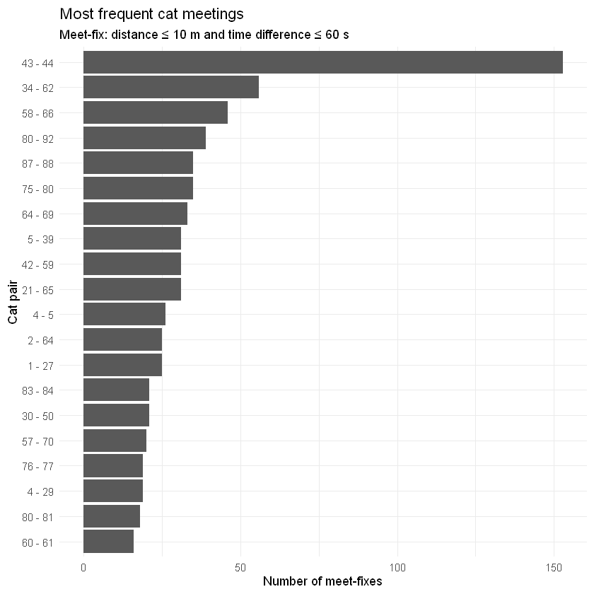
meet_points <- cat_meets %>%
mutate(
X_meet = (X + X_right) / 2,
Y_meet = (Y + Y_right) / 2,
pair_id = paste(cat_id, cat_id_right, sep = " - ")
) %>%
st_as_sf(coords = c("X_meet", "Y_meet"), crs = 25833, remove = FALSE)ggplot() +
geom_sf(data = cats_all_joined, aes(color = cat_id), size = 0.1, alpha = 0.15, show.legend = FALSE) +
geom_sf(data = meet_points, color = "black", size = 1.2, alpha = 0.7) +
coord_sf(crs = st_crs(25833), datum = st_crs(25833)) +
labs(
title = "Spatial distribution of cat meet-fixes",
subtitle = "Black points show locations where two cats were within 10 m and 60 s"
) +
theme_minimal()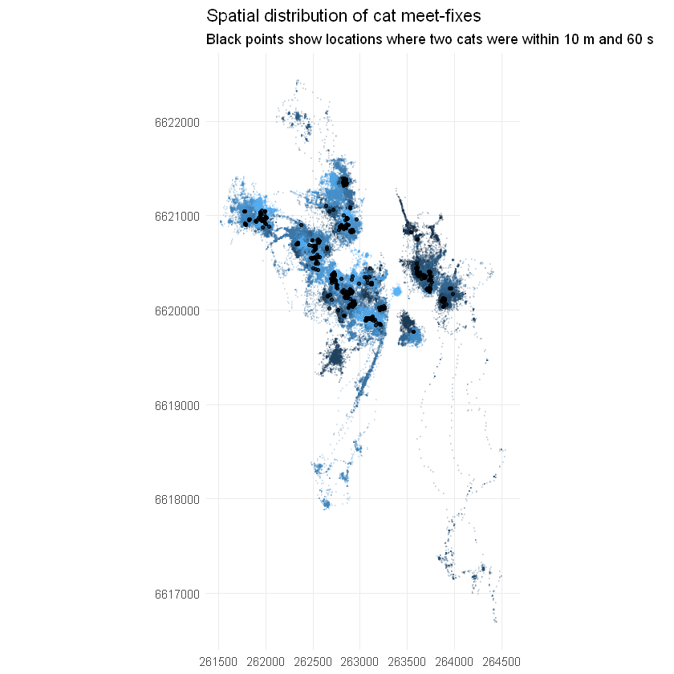
cat_meets_time <- cat_meets %>%
mutate(
hour = hour(datetime)
)ggplot(cat_meets_time, aes(x = hour)) +
geom_histogram(binwidth = 1, boundary = 0) +
scale_x_continuous(breaks = 0:23) +
labs(
x = "Hour of day",
y = "Number of meet-fixes",
title = "Cat meetings by hour of day",
subtitle = "Meet-fix: distance ≤ 10 m and time difference ≤ 60 s"
) +
theme_minimal()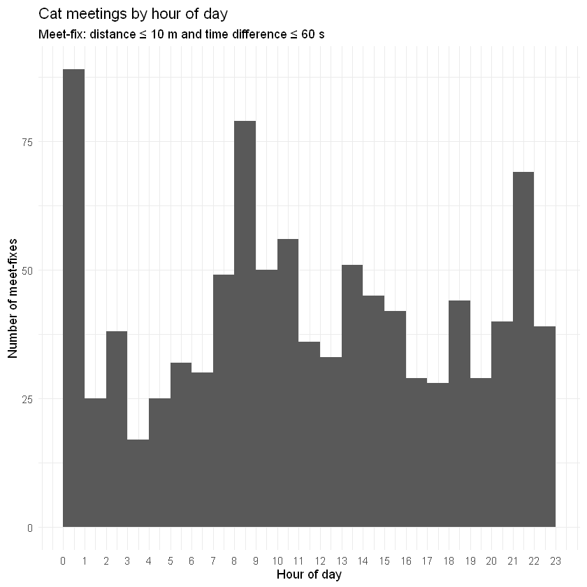
ggplot(cat_meets_time, aes(x = hour)) +
geom_histogram(
binwidth = 1,
boundary = 0,
fill = "grey90",
color = "grey30",
linewidth = 0.3
) +
scale_x_continuous(
breaks = 0:23
) +
scale_y_continuous(
expand = expansion(mult = c(0, 0.1))
) +
labs(
x = "Hour of day",
y = "Number of meet-fixes",
title = "Cat meetings by hour of day",
subtitle = "Meet-fix: distance ≤ 10 m and time difference ≤ 60 s"
) +
theme_minimal() +
theme(
panel.grid.minor = element_blank(),
plot.title = element_text(face = "bold")
)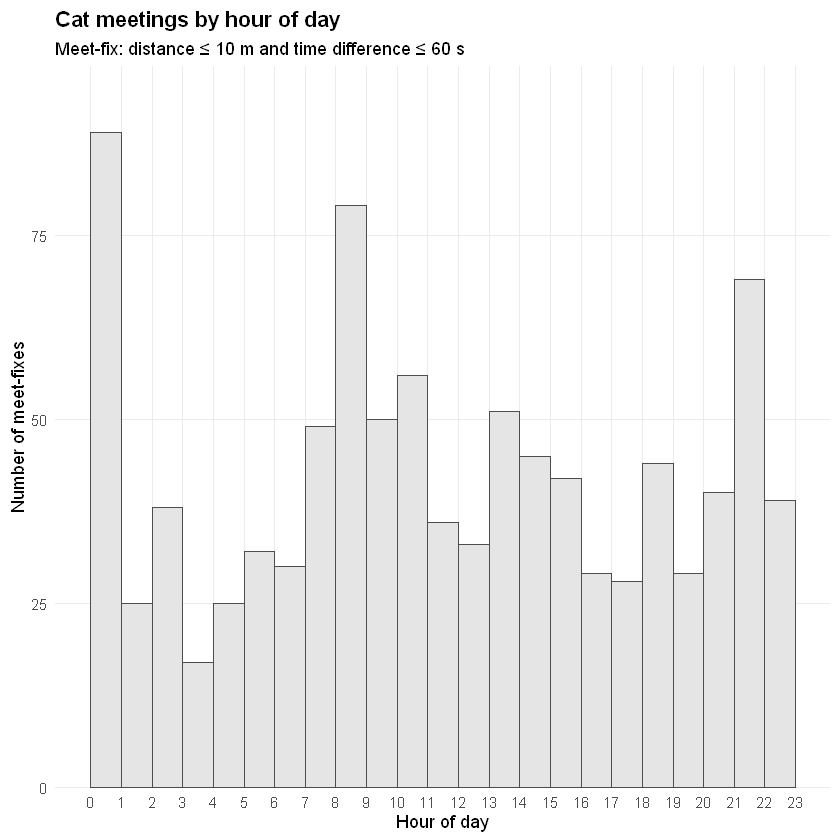
meet_matrix_data <- cat_meets %>%
group_by(cat_id, cat_id_right) %>%
summarise(
n_meet_fixes = n(),
.groups = "drop"
)ggplot(meet_matrix_data, aes(x = cat_id, y = cat_id_right, fill = n_meet_fixes)) +
geom_tile() +
labs(
x = "Cat ID",
y = "Cat ID",
fill = "Meet-fixes",
title = "Meet-frequency matrix between cats",
subtitle = "Number of meet-fixes per cat pair"
) +
theme_minimal() +
theme(
axis.text.x = element_text(angle = 90, vjust = 0.5, hjust = 1)
)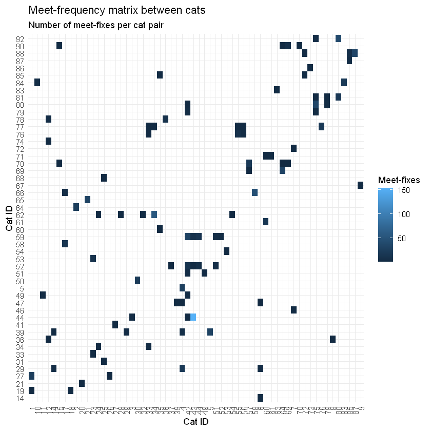
meet_points <- cat_meets %>%
mutate(
X_meet = (X + X_right) / 2,
Y_meet = (Y + Y_right) / 2
) %>%
st_as_sf(coords = c("X_meet", "Y_meet"), crs = 25833, remove = FALSE)ggplot() +
geom_sf(data = hr_all_environment, aes(fill = cat_environment), alpha = 0.15) +
geom_sf(data = meet_points, size = 1, alpha = 0.6) +
coord_sf(crs = st_crs(25833), datum = st_crs(25833)) +
labs(
title = "Spatial distribution of cat meet-fixes",
subtitle = "Meet-fixes shown together with 95% KDE home ranges"
) +
theme_minimal()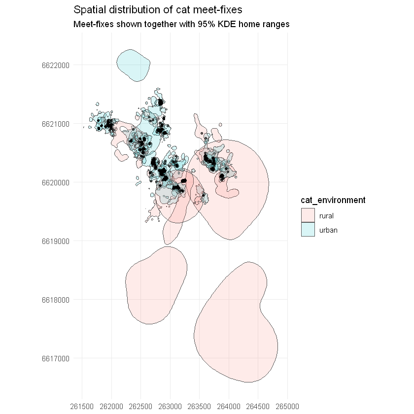
Hier wird zusätzich untersucht, inwiefern die Dichte der Meets in Zusammenhang steht mit der Anzahl Überlappungen der Home Ranges (95% KDE).
Frage: Treten Meets häufiger in Bereichen auf, wo sich viele Home Ranges überlappen?
meet_points <- st_transform(meet_points, st_crs(hr_all))meet_points$overlap_n <- lengths(st_intersects(meet_points, hr_all))meet_points <- cat_meets %>%
mutate(
X_meet = (X + X_right) / 2,
Y_meet = (Y + Y_right) / 2
) %>%
st_as_sf(
coords = c("X_meet", "Y_meet"),
crs = st_crs(cats_all_joined),
remove = FALSE
)# Meet-Punkte als Mittelpunkt zwischen beiden Katzenpositionen berechnen
# X/Y und X_right/Y_right stammen aus cats_all_joined und sind daher in EPSG:25833
meet_points <- cat_meets %>%
mutate(
X_meet = (X + X_right) / 2,
Y_meet = (Y + Y_right) / 2,
pair_id = paste(cat_id, cat_id_right, sep = " - ")
) %>%
st_as_sf(
coords = c("X_meet", "Y_meet"),
crs = st_crs(cats_all_joined),
remove = FALSE
)
# Sicherstellen, dass hr_all im gleichen CRS ist wie meet_points
hr_all <- st_transform(hr_all, st_crs(meet_points))
# Anzahl überlappender Home Ranges am jeweiligen Meet-Punkt berechnen
meet_points$overlap_n <- lengths(st_intersects(meet_points, hr_all))
# Ergebnis prüfen
meet_points %>%
st_drop_geometry() %>%
count(overlap_n) %>%
arrange(overlap_n)| overlap_n | n |
|---|---|
| <int> | <int> |
| 0 | 2 |
| 1 | 15 |
| 2 | 161 |
| 3 | 335 |
| 4 | 271 |
| 5 | 167 |
| 6 | 11 |
| 7 | 10 |
| 8 | 3 |
ggplot(meet_points %>% st_drop_geometry(), aes(x = overlap_n)) +
geom_bar() +
labs(
x = "Number of overlapping 95% KDE home ranges",
y = "Number of meet-fixes",
title = "Meet-fixes occur in areas with overlapping home ranges",
subtitle = "Meet-fix: distance ≤ 10 m and time difference ≤ 60 s"
) +
theme_minimal()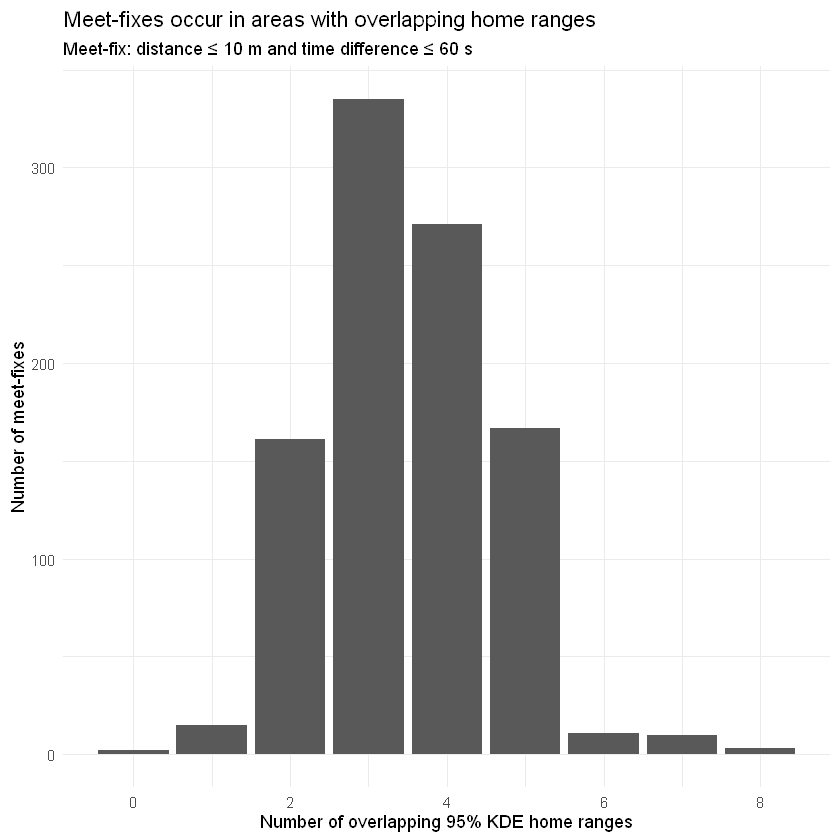
ggplot() +
geom_sf(data = hr_all, aes(fill = cat_id), alpha = 0.05, show.legend = FALSE) +
geom_sf(data = meet_points, aes(color = overlap_n), size = 1.2, alpha = 0.8) +
coord_sf(crs = st_crs(25833), datum = st_crs(25833)) +
labs(
color = "Overlapping\nhome ranges",
title = "Spatial distribution of cat meet-fixes",
subtitle = "Meet-points shown together with 95% KDE home ranges"
) +
theme_minimal()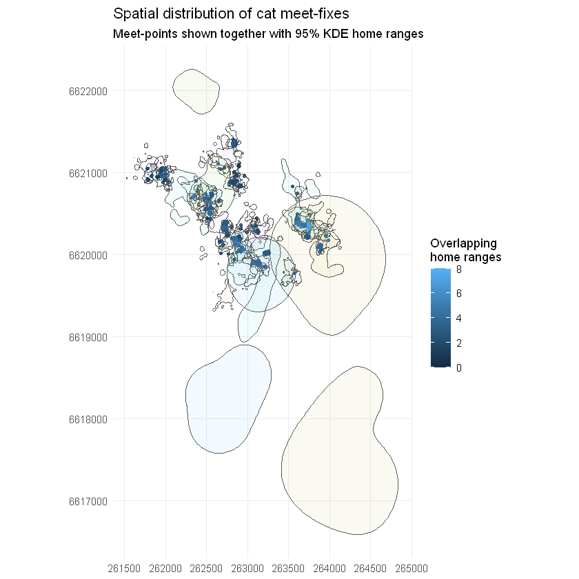